library(raretrans)
library(tidyverse)
#> ── Attaching core tidyverse packages ──────────────────────── tidyverse 2.0.0 ──
#> ✔ dplyr 1.2.0 ✔ readr 2.2.0
#> ✔ forcats 1.0.1 ✔ stringr 1.6.0
#> ✔ ggplot2 4.0.2 ✔ tibble 3.3.1
#> ✔ lubridate 1.9.5 ✔ tidyr 1.3.2
#> ✔ purrr 1.2.1
#> ── Conflicts ────────────────────────────────────────── tidyverse_conflicts() ──
#> ✖ dplyr::filter() masks stats::filter()
#> ✖ dplyr::lag() masks stats::lag()
#> ℹ Use the conflicted package (<http://conflicted.r-lib.org/>) to force all conflicts to become errors
library(popbio)
library(popdemo)
#> Welcome to popdemo! This is version 1.3-3
#> Use ?popdemo for an intro, or browseVignettes('popdemo') for vignettes
#> Citation for popdemo is here: doi.org/10.1111/j.2041-210X.2012.00222.x
#> Development and legacy versions are here: github.com/iainmstott/popdemo
library(huxtable)
#>
#> Attaching package: 'huxtable'
#>
#> The following object is masked from 'package:dplyr':
#>
#> add_rownames
#>
#> The following object is masked from 'package:ggplot2':
#>
#> theme_grey
library(furrr)
#> Loading required package: future
# Raymond's theme modifications
rlt_theme <- theme(axis.title.y = element_text(colour="grey20",size=15,face="bold"),
axis.text.x = element_text(colour="grey20",size=15, face="bold"),
axis.text.y = element_text(colour="grey20",size=15,face="bold"),
axis.title.x = element_text(colour="grey20",size=15,face="bold"))Reviewers have asked for a simulation study to confirm that the approach works. We will start with two different “true” matrices, simulate observed data from these, and then use different priors to evaluate how the method works.
Calathea, an understory herb
The first example comes from popbio::calathea containing
matrices published in Horvitz and Schemske (1995). There are 4 plots and
up to 5 years of transitions, as well as a pooled matrix. Many of the
transitions are very small probabilities. The pooled matrix is both
ergodic and irreducible, and has a population growth rate of 0.992.
calathea$pooled
#> Sd Sdlg Juv Pre Sm Med Lrg Xlrg
#> Sd 0.4983 0.0000 0.5935 7.1390 14.2715 24.6953 34.9027 40.5437
#> Sdlg 0.0973 0.0110 0.0191 0.0000 0.0000 0.0000 0.0000 0.0000
#> Juv 0.0041 0.0442 0.3378 0.0698 0.0251 0.0065 0.0085 0.0000
#> Pre 0.0000 0.0014 0.1355 0.4286 0.1736 0.0968 0.0427 0.0435
#> Sm 0.0000 0.0000 0.0363 0.3841 0.6025 0.4258 0.2991 0.2174
#> Med 0.0000 0.0000 0.0019 0.0254 0.1130 0.2387 0.1709 0.2826
#> Lrg 0.0000 0.0000 0.0000 0.0095 0.0272 0.1548 0.3248 0.1957
#> Xlrg 0.0000 0.0000 0.0000 0.0032 0.0063 0.0452 0.1282 0.2391We begin by simulating a data frame with N observations of plants.
The initial population will be sampled from the stable stage
distribution. The function raretrans::sim_transition
doesn’t quite do what we want because it returns matrices, and we want
the underlying observations. Maybe that’s what sim_transition should do,
but it doesn’t.
TF <- splitA(calathea$pooled, r = 1, c = 3:8)
df <- sim_observations(TF)
tail(df) # more interesting| Sdlg | 0 | |
| Sdlg | 0 | |
| Juv | Juv | 2 |
| Sm | Pre | 24 |
| Sm | Med | 20 |
| Sm | Sm | 19 |
projection_matrix(df, stage = "stage", fate = "fate", fertility = "Sd")
#>
#> Sd Sdlg Juv Pre Sm Med Lrg Xlrg
#> Sd 0.4891 0.0000 2.0000 0.0000 21.0000 0.0000 0.0000 0.0000
#> Sdlg 0.1196 0.0000 0.0000 0.0000 0.0000 0.0000 0.0000 0.0000
#> Juv 0.0109 0.2500 1.0000 0.0000 0.0000 0.0000 0.0000 0.0000
#> Pre 0.0000 0.0000 0.0000 0.0000 0.3333 0.0000 0.0000 0.0000
#> Sm 0.0000 0.0000 0.0000 0.0000 0.3333 0.0000 0.0000 0.0000
#> Med 0.0000 0.0000 0.0000 0.0000 0.3333 0.0000 0.0000 0.0000
#> Lrg 0.0000 0.0000 0.0000 0.0000 0.0000 0.0000 0.0000 0.0000
#> Xlrg 0.0000 0.0000 0.0000 0.0000 0.0000 0.0000 0.0000 0.0000OK, so seems to work with the modified
projection_matrix. Now we generate a number of samples to
work with, calculating some matrix statistics along the way. I’ll ignore
seeds, using the add argument to boot_transitions, and
inserting a (0.5, 0.1, 0.01, 0.39) prior for the Bayesian
version.
add_Sd <- c(1,1, TF$T[1,1], 2, 1, TF$T[2,1], 3, 1, TF$T[3,1])
prior_Sd <- c(0.5, 0.1, 0.01, 0.39)
results <- tibble(observations = map(1:100, function(x)sim_observations(TF, N = 100, initial_stages = c(0, 1, 1, 1, 1, 1, 1, 1))),
TF = map(observations, projection_matrix, fertility = "Sd", TF = TRUE),
N = map(observations, get_state_vector),
Tunif = map2(TF, N, fill_transitions),
Funif = map2(TF, N, fill_fertility),
A = map(TF, ~.x$T+.x$F),
Aunif = map2(Tunif, Funif, ~.x + .y)) %>%
mutate(lambdaraw = map_dbl(A, lambda),
lambdaunif = map_dbl(Aunif, lambda))
ggplot(data = results) +
geom_point(mapping = aes(x = lambdaraw, y = lambdaunif)) +
geom_hline(yintercept = lambda(TF$T + TF$F))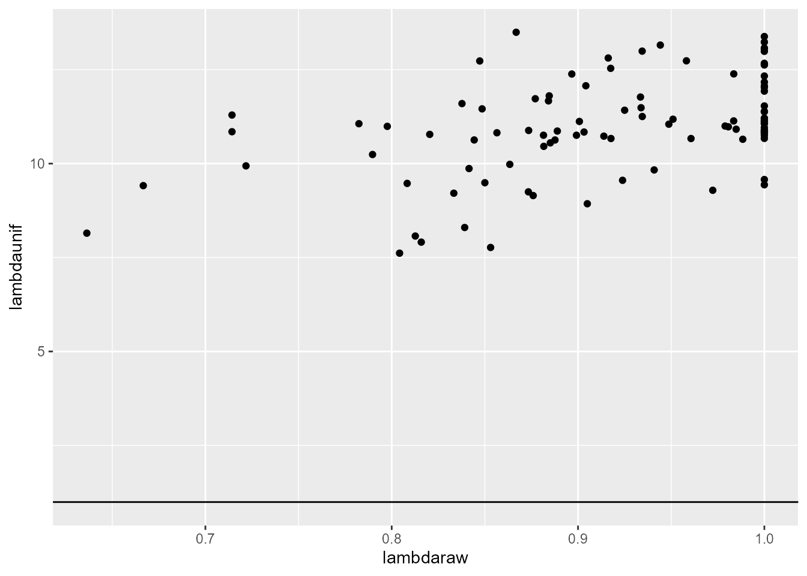
The uniform prior clearly causes issues by creating values of 1 in the fertility matrix for all stages that are not represented in the sample.Now we need to create some priors for this plant. Start with samples of size 1 for transitions known to be possible.
fix it so prior is > 0 but very small unless zeros are “structural”. Structural zeros should never be updated even if an observation is made.
Fertility priors will be 0 except for stages known to reproduce, and these will be set close to zero.
set.seed(9347905)
true_lambda <- lambda(TF$T + TF$F)
add_Sd <- c(1,1, TF$T[1,1], 2, 1, TF$T[2,1], 3, 1, TF$T[3,1])
transition_prior1 <- rbind(TF$T > 0, rep(1, times = ncol(TF$T)))
column_sums <- apply(transition_prior1, 2, sum)
transition_prior1 <- sweep(transition_prior1, 2, column_sums, `/` )
fertility_alpha <- TF$F * 0
fertility_alpha[1, 3:8] <- 1e-5
fertility_beta <- TF$F * 0 + (1-1e-5) # to keep sum = 1
results <- tibble(observations = map(1:100, function(x)sim_observations(TF, N = 100, initial_stages = c(0, 1, 1, 1, 1, 1, 1, 1))),
TF = map(observations, projection_matrix, fertility = "Sd", TF = TRUE, add = add_Sd),
N = map(observations, get_state_vector),
Tunif = map2(TF, N, fill_transitions, P = transition_prior1),
Funif = map2(TF, N, fill_fertility, alpha = fertility_alpha, beta = fertility_beta),
A = map(TF, ~.x$T+.x$F),
Aunif = map2(Tunif, Funif, ~.x + .y)) %>%
mutate(lambdaraw = map_dbl(A, lambda),
bootraw = map(observations, boot_transitions, iterations = 1000, add = add_Sd),
lci_raw = map_dbl(bootraw, ~quantile(.$lambda, p = 0.025)),
uci_raw = map_dbl(bootraw, ~quantile(.$lambda, p = 0.975)),
lambdaunif = map_dbl(Aunif, lambda))
results <- mutate(results,
goodci = lci_raw < true_lambda & uci_raw > true_lambda,
sensibleci = lci_raw < lambdaraw & uci_raw > lambdaraw)
ggplot(data = results) +
geom_point(mapping = aes(x = 1:100, y = lambdaraw, color = goodci)) +
geom_errorbar(mapping = aes(x = 1:100, ymin = lci_raw, ymax = uci_raw, color = goodci))+
geom_hline(yintercept = lambda(TF$T + TF$F), linetype = 2, color = "blue")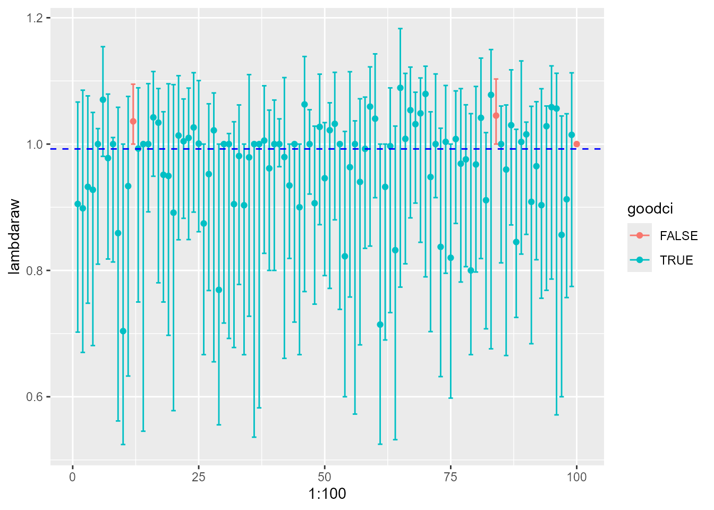
So in many cases the observed lambda is on the edge of the interval, but at they are all at least “inside” now that I’m using the correct version ofprojection_matrix in the bootstrap.
What about a larger sample size and assuming knowledge of the seed stage transitions?
set.seed(384768697)
initial_stages <- c(0, 1, 1, 1, 1, 1, 1, 1)
true_lambda <- lambda(TF$T + TF$F)
results <- tibble(observations = map(1:100,
function(x) sim_observations(TF, N = 500, initial_stages = initial_stages)),
TF = map(observations, projection_matrix, fertility = "Sd", TF = TRUE, add = add_Sd),
N = map(observations, get_state_vector),
Tunif = map2(TF, N, fill_transitions, P = transition_prior1),
Funif = map2(TF, N, fill_fertility, alpha = fertility_alpha, beta = fertility_beta),
A = map(TF, ~.x$T+.x$F),
Aunif = map2(Tunif, Funif, ~.x + .y)) %>%
mutate(lambdaraw = map_dbl(A, lambda),
bootraw = map(observations, boot_transitions, iterations = 1000, add = add_Sd),
lci_raw = map_dbl(bootraw, ~quantile(.$lambda, p = 0.025)),
uci_raw = map_dbl(bootraw, ~quantile(.$lambda, p = 0.975)),
lambdaunif = map_dbl(Aunif, lambda))
results <- mutate(results,
goodci = lci_raw < true_lambda & uci_raw > true_lambda,
sensibleci = lci_raw < lambdaraw & uci_raw > lambdaraw)
ggplot(data = results) +
geom_point(mapping = aes(x = 1:100, y = lambdaraw)) +
geom_errorbar(mapping = aes(x = 1:100, ymin = lci_raw, ymax = uci_raw,
color = goodci)) +
geom_hline(yintercept = lambda(TF$T + TF$F), linetype = 2, color = "blue")+
scale_color_manual(values=c("FALSE" = "#F8766D", "TRUE" = "#00BA38"))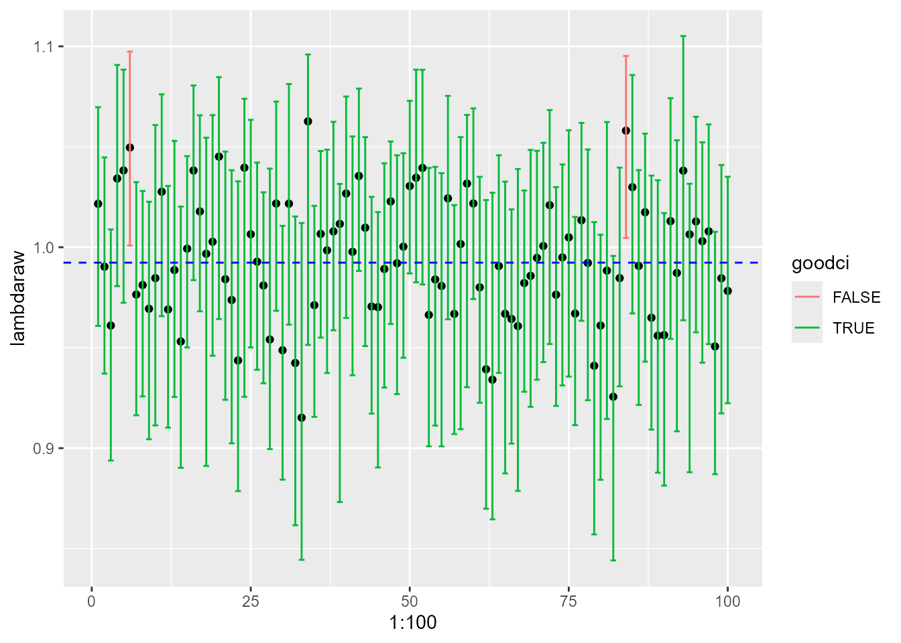
With a sample of 500 individuals 98 intervals include the true population growth rate. Indeed, only 100 intervals even include the observed growth rate.
Intervals from Bayesian posterior
results <- results %>%
mutate(sim_TF = map2(TF, N, function(.x, .y) sim_transitions(TF = .x,
N = .y, P = transition_prior1,
alpha = fertility_alpha, beta = fertility_beta,
samples = 1000)))
results <- results %>%
mutate(sim_lambdas = map(sim_TF, function(ll) map_dbl(ll, lambda)),
sim_lci = map_dbl(sim_lambdas, quantile, p = 0.025),
sim_uci = map_dbl(sim_lambdas, quantile, p = 0.975),
good_sci = sim_lci < true_lambda & sim_uci > true_lambda,
sensible_sci = sim_lci < lambdaunif & sim_uci > lambdaunif)
ggplot(data = results) +
geom_point(mapping = aes(x = 1:100, y = lambdaunif)) +
geom_errorbar(mapping = aes(x = 1:100, ymin = sim_lci, ymax = sim_uci,
color = good_sci)) +
geom_hline(yintercept = lambda(TF$T + TF$F), linetype = 2, color = "blue")+
scale_color_manual(values=c("FALSE" = "#F8766D", "TRUE" = "#00BA38"))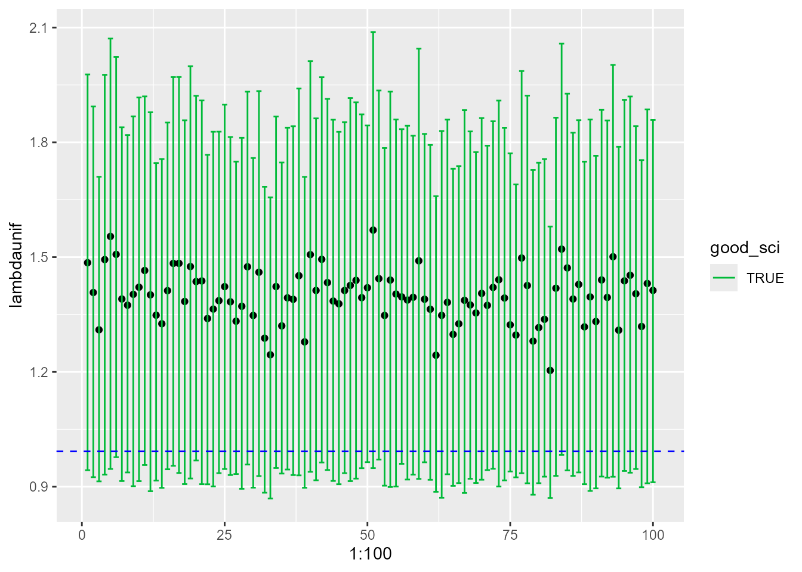
The coverage property is terrible, and the estimated lambdas are very biased. However, we have not used all the information that was available to the bootstrap – the prior for seedling transitions was uniform over the possible transitions. What if we switch to a more informative prior on seedling transitions?
transition_prior2 <- transition_prior1
prior_Sd <- c(0.5, 0.1, 0.01, 0.39)
transition_prior2[c(1:3, 9), 1] <- prior_Sd
results2 <- results %>%
mutate(sim_TF = map2(TF, N, function(.x, .y) sim_transitions(TF = .x,
N = .y, P = transition_prior2,
alpha = fertility_alpha, beta = fertility_beta,
samples = 1000)))
results <- results %>%
mutate(sim_lambdas = map(sim_TF, function(ll) map_dbl(ll, lambda)),
sim_lci = map_dbl(sim_lambdas, quantile, p = 0.025),
sim_uci = map_dbl(sim_lambdas, quantile, p = 0.975),
good_sci = sim_lci < true_lambda & sim_uci > true_lambda,
sensible_sci = sim_lci < lambdaunif & sim_uci > lambdaunif)
ggplot(data = results) +
geom_point(mapping = aes(x = 1:100, y = lambdaunif)) +
geom_errorbar(mapping = aes(x = 1:100, ymin = sim_lci, ymax = sim_uci,
color = good_sci)) +
geom_hline(yintercept = lambda(TF$T + TF$F), linetype = 2, color = "blue")+
scale_color_manual(values=c("FALSE" = "#F8766D", "TRUE" = "#00BA38"))
What about relative width and bias of the intervals versus sample size?
relative width and bias as a function of sample size
data(method_comparison_1)
# transition_prior3 <- transition_prior1
# prior_Sd <- c(0.5, 0.1, 0.01, 0.39)
# transition_prior3[c(1:3, 9), 1] <- prior_Sd * 1000
#
# set.seed(817516)
# bigresults <- tibble(sample_size = seq(50, 500, by = 50),
# observations = map(sample_size, ~map(1:100,
# function(x) sim_observations(TF, N = .x, initial_stages = initial_stages)))) %>%
# unnest(cols = observations) %>%
# mutate(
# TF = map(observations, projection_matrix, fertility = "Sd", TF = TRUE, add = add_Sd),
# N = map(observations, get_state_vector),
# A = map(TF, ~.x$T+.x$F),
# lambdaraw = map_dbl(A, lambda))
#
# method_comparison_1 <- bigresults %>%
# mutate(boot_TF = map(observations, boot_transitions, iterations = 1000, add = add_Sd),
# sim_TF = map2(TF, N, function(.x, .y) sim_transitions(TF = .x,
# N = .y, P = transition_prior3,
# alpha = fertility_alpha, beta = fertility_beta,
# samples = 1000)))
bigresults2 <- method_comparison_1 %>%
mutate(boot_lambdas = map(boot_TF, "lambda"),
boot_lci = map_dbl(boot_TF, ~quantile(.$lambda, p = 0.025)),
boot_uci = map_dbl(boot_TF, ~quantile(.$lambda, p = 0.975)),
good_bci = boot_lci < true_lambda & boot_uci > true_lambda,
width_bci = (boot_uci - boot_lci) / lambdaraw,
mean_bias_bci = map_dbl(boot_lambdas, ~mean(.x - true_lambda)),
se_bias_bci = map_dbl(boot_lambdas, ~sd(.x - true_lambda)),
sim_lambdas = map(sim_TF, function(ll) map_dbl(ll, lambda)),
sim_lci = map_dbl(sim_lambdas, quantile, p = 0.025),
sim_uci = map_dbl(sim_lambdas, quantile, p = 0.975),
good_sci = sim_lci < true_lambda & sim_uci > true_lambda,
width_sci = (sim_uci - sim_lci) / lambdaraw,
mean_bias_sci = map_dbl(sim_lambdas, ~mean(.x - true_lambda)),
se_bias_sci = map_dbl(sim_lambdas, ~sd(.x - true_lambda)))
figure_results <- bigresults2 %>%
group_by(sample_size) %>%
summarize(cover_boot = sum(good_bci),
width_boot = mean(width_bci),
width.lci_boot = quantile(width_bci, p = 0.025),
width.uci_boot = quantile(width_bci, p = 0.975),
bias_boot = mean(mean_bias_bci/true_lambda),
bias.lci_boot = quantile(mean_bias_bci/true_lambda, p = 0.025),
bias.uci_boot = quantile(mean_bias_bci/true_lambda, p = 0.975),
cover_sim = sum(good_sci),
width_sim = mean(width_sci),
width.lci_sim = quantile(width_sci, p = 0.025),
width.uci_sim = quantile(width_sci, p = 0.975),
bias_sim = mean(mean_bias_sci),
bias.lci_sim = quantile(mean_bias_sci/true_lambda, p = 0.025),
bias.uci_sim = quantile(mean_bias_sci/true_lambda, p = 0.975)) %>%
pivot_longer(cols = -1,
names_to = c(".value", "method"),
names_sep = "_")
egg::ggarrange(
ggplot(figure_results) +
geom_point(mapping = aes(x = sample_size, y = width, color = method)) +
geom_line(mapping = aes(x = sample_size, y = width, color = method)) +
geom_ribbon(mapping = aes(x = sample_size, ymin = width.lci, ymax = width.uci, fill = method), alpha = 0.1),
ggplot(figure_results) +
geom_point(mapping = aes(x = sample_size, y = bias, color = method)) +
geom_line(mapping = aes(x = sample_size, y = bias, color = method)) +
geom_ribbon(mapping = aes(x = sample_size, ymin = bias.lci, ymax = bias.uci, fill = method), alpha = 0.1))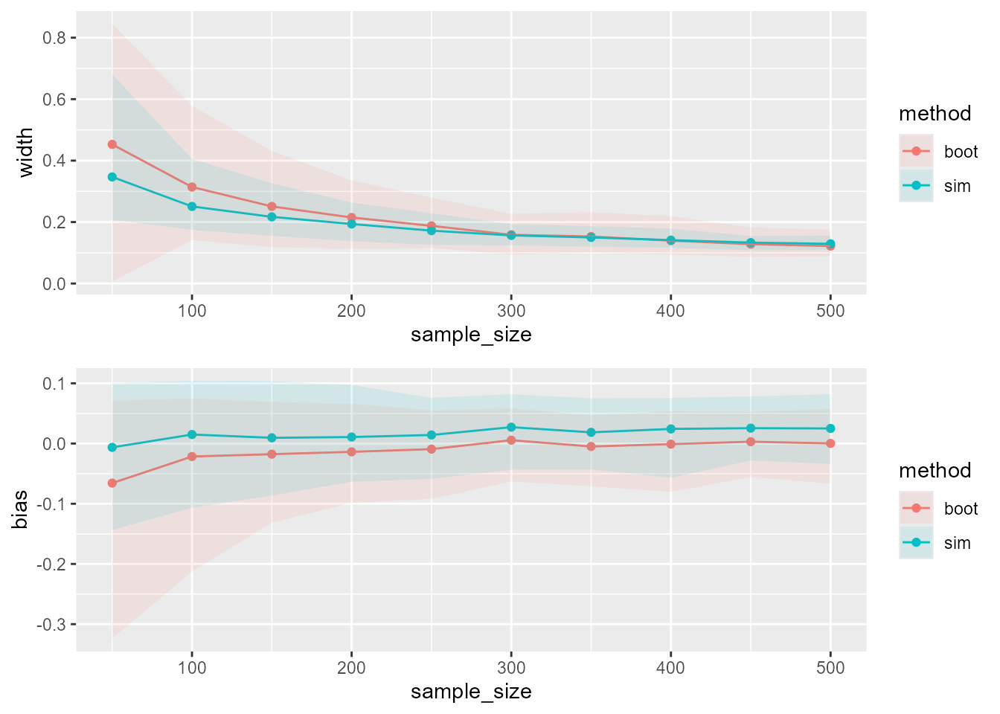
So when we provide the Bayesian method with a strong and accurate prior on the seedling transitions, as is assumed with the bootstrap, the Bayesian method performs slightly better at small sample sizes than the non-parametric bootstrap. This means that the bootstrap with the assumed transitions is overly optimistic about the precision, and potentially biased.
what about conflicting priors?
One thing that might concern users is if the prior knowledge is incorrect or misleading in some way. What are some ways this might happen? Missing possible transitions? Including impossible transitions? We rerun the simulations above with two different possible errors in the prior information. First, we will use the weak prior on seedling transitions. In the second scenario we set to zero all prior transitions with probabilities smaller than 0.01, and perturb all other positive matrix entries by 25%. We compare both of these against the Bayesian method with accurate but uninformative priors on most transitions, and accurate and strong priors on seedling transitions (closest to the bootstrap).
transition_prior4 <- TF$T
transition_prior4[TF$T < 0.01] <- 0
transition_prior4 <- transition_prior4 * 1.25 # 25% increase on priors
column_sums <- apply(transition_prior4, 2, sum)
transition_prior4[,column_sums > 1] <- sweep(transition_prior4[,column_sums > 1], 2,
column_sums[column_sums > 1], `/`)
column_sums <- apply(transition_prior4, 2, sum)
transition_prior4 <- rbind(transition_prior4, 1 - column_sums)
data(method_comparison_2)
# plan("multisession", workers = 4)
# bigresults <- tibble(sample_size = seq(50, 500, by = 50),
# observations = future_map(sample_size,
# ~map(1:100, function(x) sim_observations(TF, N = .x, initial_stages = initial_stages)),
# .options = furrr_options(seed = 449535))) %>%
# unnest(cols = observations) %>%
# mutate(
# TF = map(observations, projection_matrix, fertility = "Sd", TF = TRUE, add = add_Sd),
# N = map(observations, get_state_vector),
# A = map(TF, ~.x$T+.x$F),
# lambdaraw = map_dbl(A, lambda))
#
# method_comparison_2 <- bigresults %>%
# mutate(sim2_TF = future_map2(TF, N, function(.x, .y) sim_transitions(TF = .x,
# N = .y, P = transition_prior1,
# alpha = fertility_alpha, beta = fertility_beta,
# samples = 1000), .options = furrr_options(seed = 9989053)),
# sim3_TF = future_map2(TF, N, function(.x, .y) sim_transitions(TF = .x,
# N = .y, P = transition_prior4,
# alpha = fertility_alpha, beta = fertility_beta,
# samples = 1000), .options = furrr_options(seed = 4707179)))
bigresults2 <- method_comparison_2 %>%
mutate(sim2_lambdas = map(sim2_TF, function(ll) map_dbl(ll, lambda)),
sim2_lci = map_dbl(sim2_lambdas, quantile, p = 0.025),
sim2_uci = map_dbl(sim2_lambdas, quantile, p = 0.975),
good_sci2 = sim2_lci < true_lambda & sim2_uci > true_lambda,
width_sci2 = (sim2_uci - sim2_lci) / lambdaraw,
mean_bias_sci2 = map_dbl(sim2_lambdas, ~mean(.x - true_lambda)),
se_bias_sci2 = map_dbl(sim2_lambdas, ~sd(.x - true_lambda)),
sim3_lambdas = map(sim3_TF, function(ll) map_dbl(ll, lambda)),
sim3_lci = map_dbl(sim3_lambdas, quantile, p = 0.025),
sim3_uci = map_dbl(sim3_lambdas, quantile, p = 0.975),
good_sci3 = sim3_lci < true_lambda & sim3_uci > true_lambda,
width_sci3 = (sim3_uci - sim3_lci) / lambdaraw,
mean_bias_sci3 = map_dbl(sim3_lambdas, ~mean(.x - true_lambda)),
se_bias_sci3 = map_dbl(sim3_lambdas, ~sd(.x - true_lambda)))
figure_results2 <- bigresults2 %>%
group_by(sample_size) %>%
summarize(cover_sim2 = sum(good_sci2),
width_sim2 = mean(width_sci2),
width.lci_sim2 = quantile(width_sci2, p = 0.025),
width.uci_sim2 = quantile(width_sci2, p = 0.975),
bias_sim2 = mean(mean_bias_sci2),
bias.lci_sim2 = quantile(mean_bias_sci2/true_lambda, p = 0.025),
bias.uci_sim2 = quantile(mean_bias_sci2/true_lambda, p = 0.975),
cover_sim3 = sum(good_sci3),
width_sim3 = mean(width_sci3),
width.lci_sim3 = quantile(width_sci3, p = 0.025),
width.uci_sim3 = quantile(width_sci3, p = 0.975),
bias_sim3 = mean(mean_bias_sci3),
bias.lci_sim3 = quantile(mean_bias_sci3/true_lambda, p = 0.025),
bias.uci_sim3 = quantile(mean_bias_sci3/true_lambda, p = 0.975)) %>%
pivot_longer(cols = -1,
names_to = c(".value", "method"),
names_sep = "_")
fig_results_all <- bind_rows(figure_results, figure_results2)
egg::ggarrange(
ggplot(fig_results_all) +
geom_point(mapping = aes(x = sample_size, y = width, color = method)) +
geom_line(mapping = aes(x = sample_size, y = width, color = method)) +
geom_ribbon(mapping = aes(x = sample_size, ymin = width.lci, ymax = width.uci, fill = method), alpha = 0.1),
ggplot(fig_results_all) +
geom_point(mapping = aes(x = sample_size, y = bias, color = method)) +
geom_line(mapping = aes(x = sample_size, y = bias, color = method)) +
geom_ribbon(mapping = aes(x = sample_size, ymin = bias.lci, ymax = bias.uci, fill = method), alpha = 0.1))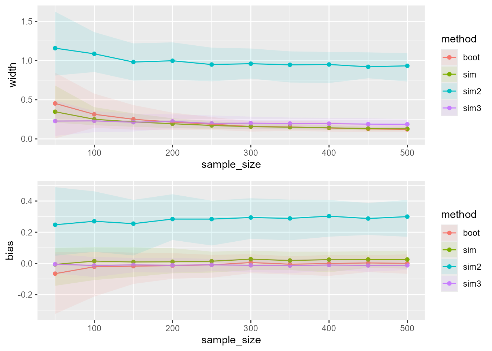
Try the figure faceted:
fig_results_all2 <- fig_results_all %>%
select(-cover) %>%
rename(width.value = width,
bias.value = bias) %>%
pivot_longer(cols = 3:8, names_to = c("metric",".value"), names_pattern = "(.*)\\.(.*)")
# from https://colorbrewer2.org/?type=qualitative&scheme=Paired&n=4
# color blind safe and printer friendly
color_scale <- c(boot = '#a6cee3', sim = '#1f78b4', sim2 = '#b2df8a', sim3 = '#33a02c')
ggplot(fig_results_all2) +
geom_point(mapping = aes(x = sample_size, y = value, color = method, shape = method)) +
geom_line(mapping = aes(x = sample_size, y = value, color = method)) +
geom_ribbon(mapping = aes(x = sample_size, ymin = lci, ymax = uci, fill = method), alpha = 0.2) +
facet_wrap(~metric, scales = "free_y") +
# theme_classic() +
rlt_theme +
theme(legend.position = "top", legend.title = element_blank()) +
scale_color_manual(values = color_scale) +
scale_fill_manual(values = color_scale) +
ylab("Relative Magnitude") +
xlab("Sample Size")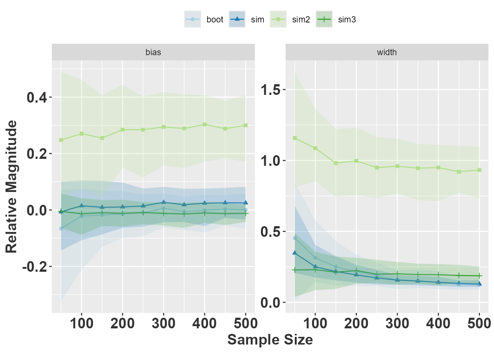
Zoomed in figure
zoom_figure <- method_comparison_1 %>%
filter(sample_size == 50) %>%
mutate(boot_lambdas = map_dbl(boot_TF, ~mean(.x$lambda)),
boot_lci = map_dbl(boot_TF, ~quantile(.$lambda, p = 0.025)),
boot_uci = map_dbl(boot_TF, ~quantile(.$lambda, p = 0.975)),
sim_all_lambdas = map(sim_TF, function(ll) map_dbl(ll, lambda)),
sim_lambdas = map_dbl(sim_all_lambdas, mean),
sim_lci = map_dbl(sim_all_lambdas, quantile, p = 0.025),
sim_uci = map_dbl(sim_all_lambdas, quantile, p = 0.975)) %>%
select(lambdaraw, boot_lambdas, boot_lci, boot_uci, sim_lambdas, sim_lci, sim_uci) %>%
pivot_longer(cols = -1,
names_to = c("method", ".value"),
names_sep = "_") %>%
arrange(method, desc(lambdas)) %>%
mutate(goodci = lci < true_lambda & uci > true_lambda,
rownum = rep(1:100, times = 2))
ggplot(zoom_figure) +
geom_point(mapping = aes(x = rownum, y = lambdas, color = goodci, shape = method)) +
geom_errorbar(mapping = aes(x = rownum, ymin = lci, ymax = uci, color = goodci))+
geom_hline(yintercept = true_lambda, linetype = 2, color = "blue")+
rlt_theme +
facet_wrap(~method) +
scale_color_manual(values = c("TRUE" = color_scale[2], "FALSE" = color_scale[4], use.names = FALSE))+
ylab(expression(lambda))+
theme(legend.position = "none",
axis.title.x = element_blank(),
axis.text.x = element_blank(),
axis.ticks.x = element_blank())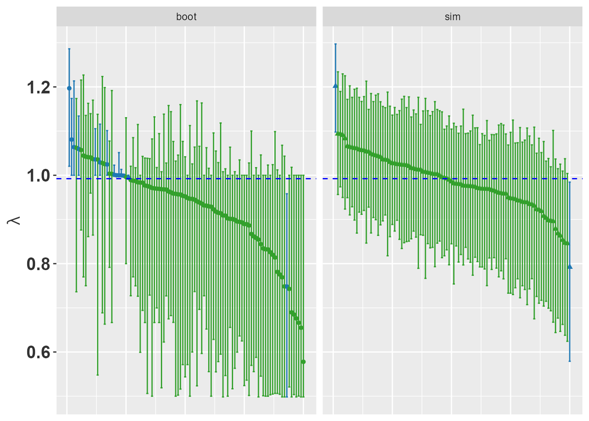
What about a different sampling strategy?
If an ecologist uses a fixed area to get the sample, then using the stable stage distribution would be a good initial vector. However, rarer stages could be oversampled by searching for them.
set.seed(5786576)
initial_stages <- c(0.5, 1, 1, 1, 1, 2, 2, 5)
true_lambda <- lambda(TF$T + TF$F)
results <- tibble(observations = map(1:100,
function(x) sim_observations(TF, N = 500, initial_stages = initial_stages)),
TF = map(observations, projection_matrix, fertility = "Sd", TF = TRUE),
N = map(observations, get_state_vector),
Tunif = map2(TF, N, fill_transitions, P = transition_prior1),
Funif = map2(TF, N, fill_fertility, alpha = fertility_alpha, beta = fertility_beta),
A = map(TF, ~.x$T+.x$F),
Aunif = map2(Tunif, Funif, ~.x + .y)) %>%
mutate(lambdaraw = map_dbl(A, lambda),
bootraw = map(observations, boot_transitions, iterations = 1000),
lci_raw = map_dbl(bootraw, ~quantile(.$lambda, p = 0.025)),
uci_raw = map_dbl(bootraw, ~quantile(.$lambda, p = 0.975)),
lambdaunif = map_dbl(Aunif, lambda))
results <- mutate(results,
goodci = lci_raw < true_lambda & uci_raw > true_lambda,
sensibleci = lci_raw < lambdaraw & uci_raw > lambdaraw)
ggplot(data = results) +
geom_point(mapping = aes(x = 1:100, y = lambdaraw)) +
geom_errorbar(mapping = aes(x = 1:100, ymin = lci_raw, ymax = uci_raw,
color = goodci)) +
geom_hline(yintercept = lambda(TF$T + TF$F), linetype = 2, color = "blue")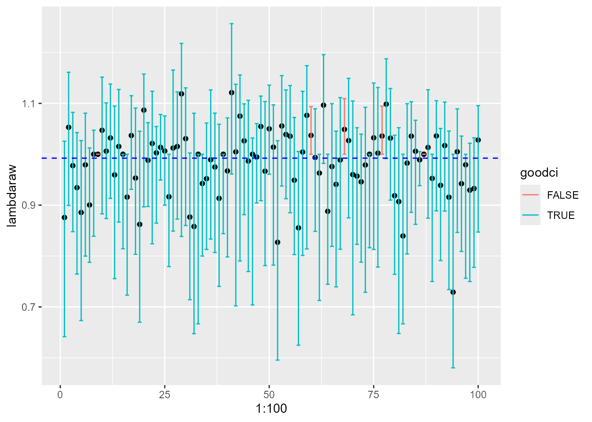
How about the Bayesian approach with oversampled data?
# no set seed because using results from previous chunk.
results <- results %>%
mutate(sim_TF = map2(TF, N, function(.x, .y) sim_transitions(TF = .x,
N = .y, P = transition_prior1,
alpha = fertility_alpha, beta = fertility_beta,
samples = 1000)))
results <- results %>%
mutate(sim_lambdas = map(sim_TF, function(ll) map_dbl(ll, lambda)),
sim_lci = map_dbl(sim_lambdas, quantile, p = 0.025),
sim_uci = map_dbl(sim_lambdas, quantile, p = 0.975),
good_sci = sim_lci < true_lambda & sim_uci > true_lambda,
sensible_sci = sim_lci < lambdaunif & sim_uci > lambdaunif)
ggplot(data = results) +
geom_point(mapping = aes(x = 1:100, y = lambdaunif)) +
geom_errorbar(mapping = aes(x = 1:100, ymin = sim_lci, ymax = sim_uci,
color = good_sci)) +
geom_hline(yintercept = lambda(TF$T + TF$F), linetype = 2, color = "blue")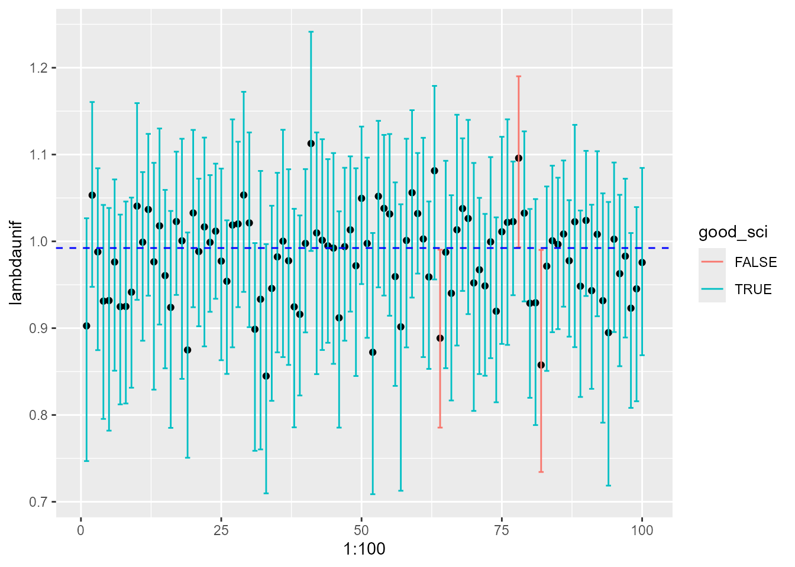
Desert Tortoise
Doak et al. (1994) published four matrices for desert tortoise (Gopherus agassizii). These matrices have entries with relatively large values for all entries, except for the transition from adult1 to adult2, which is ~0.02. We will try the bootstrap CI on these matrices.
TF <- splitA(tortoise[["high"]])
set.seed(837563)
transition_prior <- rbind(TF$T > 0, rep(1, times = ncol(TF$T)))
column_sums <- apply(transition_prior, 2, sum)
transition_prior <- sweep(transition_prior, 2, column_sums, `/` )
fertility_alpha <- TF$F * 0
fertility_alpha[1, 6:8] <- 1e-5
fertility_beta <- TF$F * 0 + (1-1e-5) # to keep sum = 1
results <- tibble(observations = map(1:100, function(x)sim_observations(TF, N = 500)),
TF = map(observations, projection_matrix, fertility = "yearling", TF = TRUE),
N = map(observations, get_state_vector),
Tunif = map2(TF, N, fill_transitions, P = transition_prior),
Funif = map2(TF, N, fill_fertility, alpha = fertility_alpha, beta = fertility_beta),
A = map(TF, ~.x$T+.x$F),
Aunif = map2(Tunif, Funif, ~.x + .y)) %>%
mutate(lambdaraw = map_dbl(A, lambda),
bootraw = map(observations, boot_transitions, iterations = 1000, by.stage.counts = TRUE, fertility = "yearling"),
lci_raw = map_dbl(bootraw, ~quantile(.$lambda, p = 0.025)),
uci_raw = map_dbl(bootraw, ~quantile(.$lambda, p = 0.975)),
lambdaunif = map_dbl(Aunif, lambda))
results$A
#> [[1]]
#>
#> yearling juv1 juv2 imm1 imm2 subadult adult1 adult2
#> yearling 0.000 0.000 0.000 0.000 0.000 1.000 3.045 5.000
#> juv1 0.744 0.619 0.000 0.000 0.000 0.000 0.000 0.000
#> juv2 0.000 0.138 0.628 0.000 0.000 0.000 0.000 0.000
#> imm1 0.000 0.000 0.141 0.594 0.000 0.000 0.000 0.000
#> imm2 0.000 0.000 0.000 0.219 0.294 0.000 0.000 0.000
#> subadult 0.000 0.000 0.000 0.000 0.294 0.556 0.000 0.000
#> adult1 0.000 0.000 0.000 0.000 0.000 0.333 0.909 0.000
#> adult2 0.000 0.000 0.000 0.000 0.000 0.000 0.000 0.667
#>
#> [[2]]
#>
#> yearling juv1 juv2 imm1 imm2 subadult adult1 adult2
#> yearling 0.0000 0.0000 0.0000 0.0000 0.0000 2.4167 3.5333 1.0000
#> juv1 0.6579 0.5442 0.0000 0.0000 0.0000 0.0000 0.0000 0.0000
#> juv2 0.0000 0.1442 0.5256 0.0000 0.0000 0.0000 0.0000 0.0000
#> imm1 0.0000 0.0000 0.2308 0.6286 0.0000 0.0000 0.0000 0.0000
#> imm2 0.0000 0.0000 0.0000 0.1429 0.5333 0.0000 0.0000 0.0000
#> subadult 0.0000 0.0000 0.0000 0.0000 0.2667 0.7500 0.0000 0.0000
#> adult1 0.0000 0.0000 0.0000 0.0000 0.0000 0.2500 0.9000 0.0000
#> adult2 0.0000 0.0000 0.0000 0.0000 0.0000 0.0000 0.0333 1.0000
#>
#> [[3]]
#>
#> yearling juv1 juv2 imm1 imm2 subadult adult1 adult2
#> yearling 0.000 0.000 0.000 0.000 0.000 2.533 2.889 3.833
#> juv1 0.691 0.572 0.000 0.000 0.000 0.000 0.000 0.000
#> juv2 0.000 0.163 0.575 0.000 0.000 0.000 0.000 0.000
#> imm1 0.000 0.000 0.125 0.792 0.000 0.000 0.000 0.000
#> imm2 0.000 0.000 0.000 0.125 0.412 0.000 0.000 0.000
#> subadult 0.000 0.000 0.000 0.000 0.412 0.800 0.000 0.000
#> adult1 0.000 0.000 0.000 0.000 0.000 0.200 0.778 0.000
#> adult2 0.000 0.000 0.000 0.000 0.000 0.000 0.000 1.000
#>
#> [[4]]
#>
#> yearling juv1 juv2 imm1 imm2 subadult adult1 adult2
#> yearling 0.0000 0.0000 0.0000 0.0000 0.0000 2.4167 3.3000 3.6667
#> juv1 0.6978 0.5490 0.0000 0.0000 0.0000 0.0000 0.0000 0.0000
#> juv2 0.0000 0.2157 0.5362 0.0000 0.0000 0.0000 0.0000 0.0000
#> imm1 0.0000 0.0000 0.2029 0.6333 0.0000 0.0000 0.0000 0.0000
#> imm2 0.0000 0.0000 0.0000 0.2667 0.6522 0.0000 0.0000 0.0000
#> subadult 0.0000 0.0000 0.0000 0.0000 0.0435 0.7500 0.0000 0.0000
#> adult1 0.0000 0.0000 0.0000 0.0000 0.0000 0.2500 0.7000 0.0000
#> adult2 0.0000 0.0000 0.0000 0.0000 0.0000 0.0000 0.0000 1.0000
#>
#> [[5]]
#>
#> yearling juv1 juv2 imm1 imm2 subadult adult1 adult2
#> yearling 0.000 0.000 0.000 0.000 0.000 2.333 3.269 4.000
#> juv1 0.701 0.597 0.000 0.000 0.000 0.000 0.000 0.000
#> juv2 0.000 0.148 0.622 0.000 0.000 0.000 0.000 0.000
#> imm1 0.000 0.000 0.135 0.520 0.000 0.000 0.000 0.000
#> imm2 0.000 0.000 0.000 0.240 0.667 0.000 0.000 0.000
#> subadult 0.000 0.000 0.000 0.000 0.167 0.889 0.000 0.000
#> adult1 0.000 0.000 0.000 0.000 0.000 0.111 0.808 0.000
#> adult2 0.000 0.000 0.000 0.000 0.000 0.000 0.000 1.000
#>
#> [[6]]
#>
#> yearling juv1 juv2 imm1 imm2 subadult adult1 adult2
#> yearling 0.0000 0.0000 0.0000 0.0000 0.0000 2.8125 2.8000 6.0000
#> juv1 0.7333 0.5244 0.0000 0.0000 0.0000 0.0000 0.0000 0.0000
#> juv2 0.0000 0.1644 0.6486 0.0000 0.0000 0.0000 0.0000 0.0000
#> imm1 0.0000 0.0000 0.0946 0.6000 0.0000 0.0000 0.0000 0.0000
#> imm2 0.0000 0.0000 0.0000 0.2400 0.6429 0.0000 0.0000 0.0000
#> subadult 0.0000 0.0000 0.0000 0.0000 0.1429 0.5000 0.0000 0.0000
#> adult1 0.0000 0.0000 0.0000 0.0000 0.0000 0.3750 0.8000 0.0000
#> adult2 0.0000 0.0000 0.0000 0.0000 0.0000 0.0000 0.0000 1.0000
#>
#> [[7]]
#>
#> yearling juv1 juv2 imm1 imm2 subadult adult1 adult2
#> yearling 0.0000 0.0000 0.0000 0.0000 0.0000 2.7778 2.9118 4.2000
#> juv1 0.6641 0.5505 0.0000 0.0000 0.0000 0.0000 0.0000 0.0000
#> juv2 0.0000 0.1414 0.5904 0.0000 0.0000 0.0000 0.0000 0.0000
#> imm1 0.0000 0.0000 0.1205 0.5217 0.0000 0.0000 0.0000 0.0000
#> imm2 0.0000 0.0000 0.0000 0.2174 0.7059 0.0000 0.0000 0.0000
#> subadult 0.0000 0.0000 0.0000 0.0000 0.1765 0.8889 0.0000 0.0000
#> adult1 0.0000 0.0000 0.0000 0.0000 0.0000 0.1111 0.7941 0.0000
#> adult2 0.0000 0.0000 0.0000 0.0000 0.0000 0.0000 0.0294 0.8000
#>
#> [[8]]
#>
#> yearling juv1 juv2 imm1 imm2 subadult adult1 adult2
#> yearling 0.0000 0.0000 0.0000 0.0000 0.0000 2.3529 2.7500 4.0000
#> juv1 0.6696 0.5216 0.0000 0.0000 0.0000 0.0000 0.0000 0.0000
#> juv2 0.0000 0.2155 0.5616 0.0000 0.0000 0.0000 0.0000 0.0000
#> imm1 0.0000 0.0000 0.1507 0.5946 0.0000 0.0000 0.0000 0.0000
#> imm2 0.0000 0.0000 0.0000 0.2162 0.5833 0.0000 0.0000 0.0000
#> subadult 0.0000 0.0000 0.0000 0.0000 0.3333 0.5882 0.0000 0.0000
#> adult1 0.0000 0.0000 0.0000 0.0000 0.0000 0.2941 0.9167 0.0000
#> adult2 0.0000 0.0000 0.0000 0.0000 0.0000 0.0000 0.0833 1.0000
#>
#> [[9]]
#>
#> yearling juv1 juv2 imm1 imm2 subadult adult1 adult2
#> yearling 0.0000 0.0000 0.0000 0.0000 0.0000 1.9231 3.5152 3.2500
#> juv1 0.7315 0.5463 0.0000 0.0000 0.0000 0.0000 0.0000 0.0000
#> juv2 0.0000 0.1707 0.5618 0.0000 0.0000 0.0000 0.0000 0.0000
#> imm1 0.0000 0.0000 0.1573 0.5333 0.0000 0.0000 0.0000 0.0000
#> imm2 0.0000 0.0000 0.0000 0.2333 0.5556 0.0000 0.0000 0.0000
#> subadult 0.0000 0.0000 0.0000 0.0000 0.3333 0.7692 0.0000 0.0000
#> adult1 0.0000 0.0000 0.0000 0.0000 0.0000 0.2308 0.7879 0.0000
#> adult2 0.0000 0.0000 0.0000 0.0000 0.0000 0.0000 0.0303 1.0000
#>
#> [[10]]
#>
#> yearling juv1 juv2 imm1 imm2 subadult adult1 adult2
#> yearling 0.0000 0.0000 0.0000 0.0000 0.0000 2.4167 3.3000 4.0000
#> juv1 0.6860 0.5721 0.0000 0.0000 0.0000 0.0000 0.0000 0.0000
#> juv2 0.0000 0.1442 0.5375 0.0000 0.0000 0.0000 0.0000 0.0000
#> imm1 0.0000 0.0000 0.1625 0.5455 0.0000 0.0000 0.0000 0.0000
#> imm2 0.0000 0.0000 0.0000 0.3030 0.5000 0.0000 0.0000 0.0000
#> subadult 0.0000 0.0000 0.0000 0.0000 0.2857 0.6667 0.0000 0.0000
#> adult1 0.0000 0.0000 0.0000 0.0000 0.0000 0.3333 0.8667 0.0000
#> adult2 0.0000 0.0000 0.0000 0.0000 0.0000 0.0000 0.0333 1.0000
#>
#> [[11]]
#>
#> yearling juv1 juv2 imm1 imm2 subadult adult1 adult2
#> yearling 0.000 0.000 0.000 0.000 0.000 2.750 3.156 4.500
#> juv1 0.697 0.585 0.000 0.000 0.000 0.000 0.000 0.000
#> juv2 0.000 0.127 0.563 0.000 0.000 0.000 0.000 0.000
#> imm1 0.000 0.000 0.115 0.621 0.000 0.000 0.000 0.000
#> imm2 0.000 0.000 0.000 0.241 0.667 0.000 0.000 0.000
#> subadult 0.000 0.000 0.000 0.000 0.267 0.500 0.000 0.000
#> adult1 0.000 0.000 0.000 0.000 0.000 0.250 0.812 0.000
#> adult2 0.000 0.000 0.000 0.000 0.000 0.000 0.000 1.000
#>
#> [[12]]
#>
#> yearling juv1 juv2 imm1 imm2 subadult adult1 adult2
#> yearling 0.0000 0.0000 0.0000 0.0000 0.0000 2.2632 3.7037 3.0000
#> juv1 0.7417 0.6239 0.0000 0.0000 0.0000 0.0000 0.0000 0.0000
#> juv2 0.0000 0.1422 0.6438 0.0000 0.0000 0.0000 0.0000 0.0000
#> imm1 0.0000 0.0000 0.0822 0.6190 0.0000 0.0000 0.0000 0.0000
#> imm2 0.0000 0.0000 0.0000 0.2857 0.4737 0.0000 0.0000 0.0000
#> subadult 0.0000 0.0000 0.0000 0.0000 0.3684 0.6316 0.0000 0.0000
#> adult1 0.0000 0.0000 0.0000 0.0000 0.0000 0.2632 0.9259 0.0000
#> adult2 0.0000 0.0000 0.0000 0.0000 0.0000 0.0000 0.0000 1.0000
#>
#> [[13]]
#>
#> yearling juv1 juv2 imm1 imm2 subadult adult1 adult2
#> yearling 0.000 0.000 0.000 0.000 0.000 2.350 2.839 3.200
#> juv1 0.750 0.616 0.000 0.000 0.000 0.000 0.000 0.000
#> juv2 0.000 0.156 0.567 0.000 0.000 0.000 0.000 0.000
#> imm1 0.000 0.000 0.183 0.571 0.000 0.000 0.000 0.000
#> imm2 0.000 0.000 0.000 0.343 0.615 0.000 0.000 0.000
#> subadult 0.000 0.000 0.000 0.000 0.385 0.600 0.000 0.000
#> adult1 0.000 0.000 0.000 0.000 0.000 0.350 0.774 0.000
#> adult2 0.000 0.000 0.000 0.000 0.000 0.000 0.000 0.800
#>
#> [[14]]
#>
#> yearling juv1 juv2 imm1 imm2 subadult adult1 adult2
#> yearling 0.000 0.000 0.000 0.000 0.000 1.727 3.538 3.857
#> juv1 0.789 0.574 0.000 0.000 0.000 0.000 0.000 0.000
#> juv2 0.000 0.162 0.562 0.000 0.000 0.000 0.000 0.000
#> imm1 0.000 0.000 0.125 0.667 0.000 0.000 0.000 0.000
#> imm2 0.000 0.000 0.000 0.200 0.579 0.000 0.000 0.000
#> subadult 0.000 0.000 0.000 0.000 0.211 0.818 0.000 0.000
#> adult1 0.000 0.000 0.000 0.000 0.000 0.182 0.923 0.000
#> adult2 0.000 0.000 0.000 0.000 0.000 0.000 0.000 0.857
#>
#> [[15]]
#>
#> yearling juv1 juv2 imm1 imm2 subadult adult1 adult2
#> yearling 0.0000 0.0000 0.0000 0.0000 0.0000 2.6000 4.0476 6.5000
#> juv1 0.7519 0.5646 0.0000 0.0000 0.0000 0.0000 0.0000 0.0000
#> juv2 0.0000 0.1244 0.5952 0.0000 0.0000 0.0000 0.0000 0.0000
#> imm1 0.0000 0.0000 0.1310 0.3636 0.0000 0.0000 0.0000 0.0000
#> imm2 0.0000 0.0000 0.0000 0.4091 0.5556 0.0000 0.0000 0.0000
#> subadult 0.0000 0.0000 0.0000 0.0000 0.2222 0.8667 0.0000 0.0000
#> adult1 0.0000 0.0000 0.0000 0.0000 0.0000 0.1333 0.7143 0.0000
#> adult2 0.0000 0.0000 0.0000 0.0000 0.0000 0.0000 0.0476 1.0000
#>
#> [[16]]
#>
#> yearling juv1 juv2 imm1 imm2 subadult adult1 adult2
#> yearling 0.000 0.000 0.000 0.000 0.000 2.091 3.121 3.750
#> juv1 0.746 0.515 0.000 0.000 0.000 0.000 0.000 0.000
#> juv2 0.000 0.150 0.587 0.000 0.000 0.000 0.000 0.000
#> imm1 0.000 0.000 0.133 0.633 0.000 0.000 0.000 0.000
#> imm2 0.000 0.000 0.000 0.200 0.353 0.000 0.000 0.000
#> subadult 0.000 0.000 0.000 0.000 0.235 0.818 0.000 0.000
#> adult1 0.000 0.000 0.000 0.000 0.000 0.182 0.879 0.000
#> adult2 0.000 0.000 0.000 0.000 0.000 0.000 0.000 1.000
#>
#> [[17]]
#>
#> yearling juv1 juv2 imm1 imm2 subadult adult1 adult2
#> yearling 0.0000 0.0000 0.0000 0.0000 0.0000 2.4000 2.9565 6.0000
#> juv1 0.7236 0.5769 0.0000 0.0000 0.0000 0.0000 0.0000 0.0000
#> juv2 0.0000 0.1731 0.5375 0.0000 0.0000 0.0000 0.0000 0.0000
#> imm1 0.0000 0.0000 0.1125 0.6129 0.0000 0.0000 0.0000 0.0000
#> imm2 0.0000 0.0000 0.0000 0.2258 0.4118 0.0000 0.0000 0.0000
#> subadult 0.0000 0.0000 0.0000 0.0000 0.5294 0.8000 0.0000 0.0000
#> adult1 0.0000 0.0000 0.0000 0.0000 0.0000 0.1333 0.6522 0.0000
#> adult2 0.0000 0.0000 0.0000 0.0000 0.0000 0.0000 0.0435 1.0000
#>
#> [[18]]
#>
#> yearling juv1 juv2 imm1 imm2 subadult adult1 adult2
#> yearling 0.000 0.000 0.000 0.000 0.000 2.571 3.310 3.500
#> juv1 0.686 0.537 0.000 0.000 0.000 0.000 0.000 0.000
#> juv2 0.000 0.177 0.563 0.000 0.000 0.000 0.000 0.000
#> imm1 0.000 0.000 0.155 0.517 0.000 0.000 0.000 0.000
#> imm2 0.000 0.000 0.000 0.207 0.400 0.000 0.000 0.000
#> subadult 0.000 0.000 0.000 0.000 0.300 0.857 0.000 0.000
#> adult1 0.000 0.000 0.000 0.000 0.000 0.143 0.897 0.000
#> adult2 0.000 0.000 0.000 0.000 0.000 0.000 0.000 1.000
#>
#> [[19]]
#>
#> yearling juv1 juv2 imm1 imm2 subadult adult1 adult2
#> yearling 0.0000 0.0000 0.0000 0.0000 0.0000 1.6429 3.2609 4.1000
#> juv1 0.7350 0.5660 0.0000 0.0000 0.0000 0.0000 0.0000 0.0000
#> juv2 0.0000 0.1462 0.5185 0.0000 0.0000 0.0000 0.0000 0.0000
#> imm1 0.0000 0.0000 0.1852 0.6562 0.0000 0.0000 0.0000 0.0000
#> imm2 0.0000 0.0000 0.0000 0.1562 0.5455 0.0000 0.0000 0.0000
#> subadult 0.0000 0.0000 0.0000 0.0000 0.1818 0.5714 0.0000 0.0000
#> adult1 0.0000 0.0000 0.0000 0.0000 0.0000 0.2143 0.7391 0.0000
#> adult2 0.0000 0.0000 0.0000 0.0000 0.0000 0.0000 0.0435 0.8000
#>
#> [[20]]
#>
#> yearling juv1 juv2 imm1 imm2 subadult adult1 adult2
#> yearling 0.000 0.000 0.000 0.000 0.000 2.167 3.640 2.500
#> juv1 0.674 0.573 0.000 0.000 0.000 0.000 0.000 0.000
#> juv2 0.000 0.156 0.629 0.000 0.000 0.000 0.000 0.000
#> imm1 0.000 0.000 0.143 0.605 0.000 0.000 0.000 0.000
#> imm2 0.000 0.000 0.000 0.209 0.800 0.000 0.000 0.000
#> subadult 0.000 0.000 0.000 0.000 0.100 0.667 0.000 0.000
#> adult1 0.000 0.000 0.000 0.000 0.000 0.250 0.880 0.000
#> adult2 0.000 0.000 0.000 0.000 0.000 0.000 0.040 1.000
#>
#> [[21]]
#>
#> yearling juv1 juv2 imm1 imm2 subadult adult1 adult2
#> yearling 0.000 0.000 0.000 0.000 0.000 3.429 2.889 4.000
#> juv1 0.711 0.517 0.000 0.000 0.000 0.000 0.000 0.000
#> juv2 0.000 0.155 0.533 0.000 0.000 0.000 0.000 0.000
#> imm1 0.000 0.000 0.167 0.652 0.000 0.000 0.000 0.000
#> imm2 0.000 0.000 0.000 0.217 0.647 0.000 0.000 0.000
#> subadult 0.000 0.000 0.000 0.000 0.118 0.571 0.000 0.000
#> adult1 0.000 0.000 0.000 0.000 0.000 0.286 0.889 0.000
#> adult2 0.000 0.000 0.000 0.000 0.000 0.000 0.000 1.000
#>
#> [[22]]
#>
#> yearling juv1 juv2 imm1 imm2 subadult adult1 adult2
#> yearling 0.0000 0.0000 0.0000 0.0000 0.0000 2.8889 3.8947 5.6000
#> juv1 0.7537 0.5748 0.0000 0.0000 0.0000 0.0000 0.0000 0.0000
#> juv2 0.0000 0.1682 0.5946 0.0000 0.0000 0.0000 0.0000 0.0000
#> imm1 0.0000 0.0000 0.1081 0.7000 0.0000 0.0000 0.0000 0.0000
#> imm2 0.0000 0.0000 0.0000 0.1667 0.8000 0.0000 0.0000 0.0000
#> subadult 0.0000 0.0000 0.0000 0.0000 0.0667 0.6667 0.0000 0.0000
#> adult1 0.0000 0.0000 0.0000 0.0000 0.0000 0.2222 0.8421 0.0000
#> adult2 0.0000 0.0000 0.0000 0.0000 0.0000 0.0000 0.0526 0.8000
#>
#> [[23]]
#>
#> yearling juv1 juv2 imm1 imm2 subadult adult1 adult2
#> yearling 0.000 0.000 0.000 0.000 0.000 2.133 3.250 4.167
#> juv1 0.752 0.547 0.000 0.000 0.000 0.000 0.000 0.000
#> juv2 0.000 0.140 0.600 0.000 0.000 0.000 0.000 0.000
#> imm1 0.000 0.000 0.125 0.423 0.000 0.000 0.000 0.000
#> imm2 0.000 0.000 0.000 0.269 0.800 0.000 0.000 0.000
#> subadult 0.000 0.000 0.000 0.000 0.100 0.600 0.000 0.000
#> adult1 0.000 0.000 0.000 0.000 0.000 0.333 0.938 0.000
#> adult2 0.000 0.000 0.000 0.000 0.000 0.000 0.000 1.000
#>
#> [[24]]
#>
#> yearling juv1 juv2 imm1 imm2 subadult adult1 adult2
#> yearling 0.0000 0.0000 0.0000 0.0000 0.0000 1.8667 3.5000 4.7143
#> juv1 0.7459 0.5721 0.0000 0.0000 0.0000 0.0000 0.0000 0.0000
#> juv2 0.0000 0.1394 0.6351 0.0000 0.0000 0.0000 0.0000 0.0000
#> imm1 0.0000 0.0000 0.1757 0.4516 0.0000 0.0000 0.0000 0.0000
#> imm2 0.0000 0.0000 0.0000 0.3226 0.4348 0.0000 0.0000 0.0000
#> subadult 0.0000 0.0000 0.0000 0.0000 0.3478 0.8667 0.0000 0.0000
#> adult1 0.0000 0.0000 0.0000 0.0000 0.0000 0.0667 0.9000 0.0000
#> adult2 0.0000 0.0000 0.0000 0.0000 0.0000 0.0000 0.0000 0.7143
#>
#> [[25]]
#>
#> yearling juv1 juv2 imm1 imm2 subadult adult1 adult2
#> yearling 0.0000 0.0000 0.0000 0.0000 0.0000 1.9167 3.9375 2.0000
#> juv1 0.7273 0.5426 0.0000 0.0000 0.0000 0.0000 0.0000 0.0000
#> juv2 0.0000 0.1928 0.5135 0.0000 0.0000 0.0000 0.0000 0.0000
#> imm1 0.0000 0.0000 0.1622 0.7059 0.0000 0.0000 0.0000 0.0000
#> imm2 0.0000 0.0000 0.0000 0.1176 0.5263 0.0000 0.0000 0.0000
#> subadult 0.0000 0.0000 0.0000 0.0000 0.3158 0.7500 0.0000 0.0000
#> adult1 0.0000 0.0000 0.0000 0.0000 0.0000 0.0833 0.8125 0.0000
#> adult2 0.0000 0.0000 0.0000 0.0000 0.0000 0.0000 0.0625 1.0000
#>
#> [[26]]
#>
#> yearling juv1 juv2 imm1 imm2 subadult adult1 adult2
#> yearling 0.0000 0.0000 0.0000 0.0000 0.0000 1.8667 3.8571 2.6667
#> juv1 0.6857 0.5534 0.0000 0.0000 0.0000 0.0000 0.0000 0.0000
#> juv2 0.0000 0.1359 0.5000 0.0000 0.0000 0.0000 0.0000 0.0000
#> imm1 0.0000 0.0000 0.2368 0.5172 0.0000 0.0000 0.0000 0.0000
#> imm2 0.0000 0.0000 0.0000 0.3103 0.7059 0.0000 0.0000 0.0000
#> subadult 0.0000 0.0000 0.0000 0.0000 0.1765 0.4667 0.0000 0.0000
#> adult1 0.0000 0.0000 0.0000 0.0000 0.0000 0.4667 0.8571 0.0000
#> adult2 0.0000 0.0000 0.0000 0.0000 0.0000 0.0000 0.0714 0.6667
#>
#> [[27]]
#>
#> yearling juv1 juv2 imm1 imm2 subadult adult1 adult2
#> yearling 0.000 0.000 0.000 0.000 0.000 1.500 3.565 4.571
#> juv1 0.735 0.533 0.000 0.000 0.000 0.000 0.000 0.000
#> juv2 0.000 0.157 0.500 0.000 0.000 0.000 0.000 0.000
#> imm1 0.000 0.000 0.182 0.621 0.000 0.000 0.000 0.000
#> imm2 0.000 0.000 0.000 0.241 0.368 0.000 0.000 0.000
#> subadult 0.000 0.000 0.000 0.000 0.158 0.600 0.000 0.000
#> adult1 0.000 0.000 0.000 0.000 0.000 0.400 0.913 0.000
#> adult2 0.000 0.000 0.000 0.000 0.000 0.000 0.000 1.000
#>
#> [[28]]
#>
#> yearling juv1 juv2 imm1 imm2 subadult adult1 adult2
#> yearling 0.0000 0.0000 0.0000 0.0000 0.0000 1.7000 2.9565 5.0000
#> juv1 0.6899 0.5389 0.0000 0.0000 0.0000 0.0000 0.0000 0.0000
#> juv2 0.0000 0.1295 0.5517 0.0000 0.0000 0.0000 0.0000 0.0000
#> imm1 0.0000 0.0000 0.1839 0.7222 0.0000 0.0000 0.0000 0.0000
#> imm2 0.0000 0.0000 0.0000 0.0833 0.7647 0.0000 0.0000 0.0000
#> subadult 0.0000 0.0000 0.0000 0.0000 0.1765 0.5000 0.0000 0.0000
#> adult1 0.0000 0.0000 0.0000 0.0000 0.0000 0.2000 0.8261 0.0000
#> adult2 0.0000 0.0000 0.0000 0.0000 0.0000 0.0000 0.0000 0.8000
#>
#> [[29]]
#>
#> yearling juv1 juv2 imm1 imm2 subadult adult1 adult2
#> yearling 0.000 0.000 0.000 0.000 0.000 2.857 3.423 5.000
#> juv1 0.744 0.572 0.000 0.000 0.000 0.000 0.000 0.000
#> juv2 0.000 0.139 0.614 0.000 0.000 0.000 0.000 0.000
#> imm1 0.000 0.000 0.148 0.633 0.000 0.000 0.000 0.000
#> imm2 0.000 0.000 0.000 0.200 0.600 0.000 0.000 0.000
#> subadult 0.000 0.000 0.000 0.000 0.000 0.643 0.000 0.000
#> adult1 0.000 0.000 0.000 0.000 0.000 0.214 0.846 0.000
#> adult2 0.000 0.000 0.000 0.000 0.000 0.000 0.000 1.000
#>
#> [[30]]
#>
#> yearling juv1 juv2 imm1 imm2 subadult adult1 adult2
#> yearling 0.0000 0.0000 0.0000 0.0000 0.0000 2.3571 3.6471 3.2500
#> juv1 0.7350 0.5600 0.0000 0.0000 0.0000 0.0000 0.0000 0.0000
#> juv2 0.0000 0.1600 0.5309 0.0000 0.0000 0.0000 0.0000 0.0000
#> imm1 0.0000 0.0000 0.1358 0.5517 0.0000 0.0000 0.0000 0.0000
#> imm2 0.0000 0.0000 0.0000 0.1379 0.5385 0.0000 0.0000 0.0000
#> subadult 0.0000 0.0000 0.0000 0.0000 0.3077 0.9286 0.0000 0.0000
#> adult1 0.0000 0.0000 0.0000 0.0000 0.0000 0.0714 0.9412 0.0000
#> adult2 0.0000 0.0000 0.0000 0.0000 0.0000 0.0000 0.0000 1.0000
#>
#> [[31]]
#>
#> yearling juv1 juv2 imm1 imm2 subadult adult1 adult2
#> yearling 0.0000 0.0000 0.0000 0.0000 0.0000 2.2381 2.8077 6.0000
#> juv1 0.6897 0.5372 0.0000 0.0000 0.0000 0.0000 0.0000 0.0000
#> juv2 0.0000 0.1543 0.5946 0.0000 0.0000 0.0000 0.0000 0.0000
#> imm1 0.0000 0.0000 0.1216 0.5000 0.0000 0.0000 0.0000 0.0000
#> imm2 0.0000 0.0000 0.0000 0.3810 0.5312 0.0000 0.0000 0.0000
#> subadult 0.0000 0.0000 0.0000 0.0000 0.2500 0.4762 0.0000 0.0000
#> adult1 0.0000 0.0000 0.0000 0.0000 0.0000 0.4762 0.7692 0.0000
#> adult2 0.0000 0.0000 0.0000 0.0000 0.0000 0.0000 0.0385 1.0000
#>
#> [[32]]
#>
#> yearling juv1 juv2 imm1 imm2 subadult adult1 adult2
#> yearling 0.0000 0.0000 0.0000 0.0000 0.0000 2.4375 3.0000 0.0000
#> juv1 0.7863 0.5133 0.0000 0.0000 0.0000 0.0000 0.0000 0.0000
#> juv2 0.0000 0.1681 0.5375 0.0000 0.0000 0.0000 0.0000 0.0000
#> imm1 0.0000 0.0000 0.1000 0.7667 0.0000 0.0000 0.0000 0.0000
#> imm2 0.0000 0.0000 0.0000 0.1000 0.6000 0.0000 0.0000 0.0000
#> subadult 0.0000 0.0000 0.0000 0.0000 0.2000 0.5625 0.0000 0.0000
#> adult1 0.0000 0.0000 0.0000 0.0000 0.0000 0.3750 0.9375 0.0000
#> adult2 0.0000 0.0000 0.0000 0.0000 0.0000 0.0000 0.0625 0.0000
#>
#> [[33]]
#>
#> yearling juv1 juv2 imm1 imm2 subadult adult1 adult2
#> yearling 0.0000 0.0000 0.0000 0.0000 0.0000 2.2500 3.1333 4.2000
#> juv1 0.7037 0.6350 0.0000 0.0000 0.0000 0.0000 0.0000 0.0000
#> juv2 0.0000 0.1300 0.5857 0.0000 0.0000 0.0000 0.0000 0.0000
#> imm1 0.0000 0.0000 0.1143 0.5625 0.0000 0.0000 0.0000 0.0000
#> imm2 0.0000 0.0000 0.0000 0.2188 0.5000 0.0000 0.0000 0.0000
#> subadult 0.0000 0.0000 0.0000 0.0000 0.1875 0.5833 0.0000 0.0000
#> adult1 0.0000 0.0000 0.0000 0.0000 0.0000 0.3333 0.7000 0.0000
#> adult2 0.0000 0.0000 0.0000 0.0000 0.0000 0.0000 0.0333 0.8000
#>
#> [[34]]
#>
#> yearling juv1 juv2 imm1 imm2 subadult adult1 adult2
#> yearling 0.0000 0.0000 0.0000 0.0000 0.0000 2.1176 3.5909 4.0000
#> juv1 0.6964 0.5890 0.0000 0.0000 0.0000 0.0000 0.0000 0.0000
#> juv2 0.0000 0.1370 0.5952 0.0000 0.0000 0.0000 0.0000 0.0000
#> imm1 0.0000 0.0000 0.1310 0.6923 0.0000 0.0000 0.0000 0.0000
#> imm2 0.0000 0.0000 0.0000 0.2308 0.5789 0.0000 0.0000 0.0000
#> subadult 0.0000 0.0000 0.0000 0.0000 0.1579 0.5882 0.0000 0.0000
#> adult1 0.0000 0.0000 0.0000 0.0000 0.0000 0.3529 0.8636 0.0000
#> adult2 0.0000 0.0000 0.0000 0.0000 0.0000 0.0000 0.0455 1.0000
#>
#> [[35]]
#>
#> yearling juv1 juv2 imm1 imm2 subadult adult1 adult2
#> yearling 0.000 0.000 0.000 0.000 0.000 2.167 2.357 4.500
#> juv1 0.672 0.593 0.000 0.000 0.000 0.000 0.000 0.000
#> juv2 0.000 0.148 0.493 0.000 0.000 0.000 0.000 0.000
#> imm1 0.000 0.000 0.133 0.621 0.000 0.000 0.000 0.000
#> imm2 0.000 0.000 0.000 0.241 0.522 0.000 0.000 0.000
#> subadult 0.000 0.000 0.000 0.000 0.304 0.833 0.000 0.000
#> adult1 0.000 0.000 0.000 0.000 0.000 0.000 1.000 0.000
#> adult2 0.000 0.000 0.000 0.000 0.000 0.000 0.000 0.833
#>
#> [[36]]
#>
#> yearling juv1 juv2 imm1 imm2 subadult adult1 adult2
#> yearling 0.0000 0.0000 0.0000 0.0000 0.0000 3.0000 3.3200 3.5000
#> juv1 0.7317 0.5806 0.0000 0.0000 0.0000 0.0000 0.0000 0.0000
#> juv2 0.0000 0.1659 0.4857 0.0000 0.0000 0.0000 0.0000 0.0000
#> imm1 0.0000 0.0000 0.1571 0.5789 0.0000 0.0000 0.0000 0.0000
#> imm2 0.0000 0.0000 0.0000 0.3158 0.7333 0.0000 0.0000 0.0000
#> subadult 0.0000 0.0000 0.0000 0.0000 0.0667 0.8000 0.0000 0.0000
#> adult1 0.0000 0.0000 0.0000 0.0000 0.0000 0.1000 0.8000 0.0000
#> adult2 0.0000 0.0000 0.0000 0.0000 0.0000 0.0000 0.0400 1.0000
#>
#> [[37]]
#>
#> yearling juv1 juv2 imm1 imm2 subadult adult1 adult2
#> yearling 0.000 0.000 0.000 0.000 0.000 3.000 3.385 4.500
#> juv1 0.712 0.564 0.000 0.000 0.000 0.000 0.000 0.000
#> juv2 0.000 0.166 0.679 0.000 0.000 0.000 0.000 0.000
#> imm1 0.000 0.000 0.103 0.654 0.000 0.000 0.000 0.000
#> imm2 0.000 0.000 0.000 0.192 0.714 0.000 0.000 0.000
#> subadult 0.000 0.000 0.000 0.000 0.000 0.889 0.000 0.000
#> adult1 0.000 0.000 0.000 0.000 0.000 0.111 0.923 0.000
#> adult2 0.000 0.000 0.000 0.000 0.000 0.000 0.000 1.000
#>
#> [[38]]
#>
#> yearling juv1 juv2 imm1 imm2 subadult adult1 adult2
#> yearling 0.000 0.000 0.000 0.000 0.000 1.750 3.625 5.000
#> juv1 0.686 0.559 0.000 0.000 0.000 0.000 0.000 0.000
#> juv2 0.000 0.136 0.607 0.000 0.000 0.000 0.000 0.000
#> imm1 0.000 0.000 0.155 0.619 0.000 0.000 0.000 0.000
#> imm2 0.000 0.000 0.000 0.333 0.312 0.000 0.000 0.000
#> subadult 0.000 0.000 0.000 0.000 0.500 0.625 0.000 0.000
#> adult1 0.000 0.000 0.000 0.000 0.000 0.375 0.875 0.000
#> adult2 0.000 0.000 0.000 0.000 0.000 0.000 0.000 0.000
#>
#> [[39]]
#>
#> yearling juv1 juv2 imm1 imm2 subadult adult1 adult2
#> yearling 0.0000 0.0000 0.0000 0.0000 0.0000 2.4375 3.4375 4.0000
#> juv1 0.7949 0.5631 0.0000 0.0000 0.0000 0.0000 0.0000 0.0000
#> juv2 0.0000 0.1847 0.5326 0.0000 0.0000 0.0000 0.0000 0.0000
#> imm1 0.0000 0.0000 0.1304 0.6000 0.0000 0.0000 0.0000 0.0000
#> imm2 0.0000 0.0000 0.0000 0.2500 0.9375 0.0000 0.0000 0.0000
#> subadult 0.0000 0.0000 0.0000 0.0000 0.0625 0.6875 0.0000 0.0000
#> adult1 0.0000 0.0000 0.0000 0.0000 0.0000 0.3125 0.8750 0.0000
#> adult2 0.0000 0.0000 0.0000 0.0000 0.0000 0.0000 0.0625 1.0000
#>
#> [[40]]
#>
#> yearling juv1 juv2 imm1 imm2 subadult adult1 adult2
#> yearling 0.0000 0.0000 0.0000 0.0000 0.0000 2.6250 3.4231 5.4000
#> juv1 0.7293 0.5566 0.0000 0.0000 0.0000 0.0000 0.0000 0.0000
#> juv2 0.0000 0.1368 0.5373 0.0000 0.0000 0.0000 0.0000 0.0000
#> imm1 0.0000 0.0000 0.2239 0.5714 0.0000 0.0000 0.0000 0.0000
#> imm2 0.0000 0.0000 0.0000 0.2000 0.8571 0.0000 0.0000 0.0000
#> subadult 0.0000 0.0000 0.0000 0.0000 0.0714 0.6250 0.0000 0.0000
#> adult1 0.0000 0.0000 0.0000 0.0000 0.0000 0.3750 0.8462 0.0000
#> adult2 0.0000 0.0000 0.0000 0.0000 0.0000 0.0000 0.0385 0.8000
#>
#> [[41]]
#>
#> yearling juv1 juv2 imm1 imm2 subadult adult1 adult2
#> yearling 0.000 0.000 0.000 0.000 0.000 1.800 3.783 4.000
#> juv1 0.670 0.549 0.000 0.000 0.000 0.000 0.000 0.000
#> juv2 0.000 0.160 0.616 0.000 0.000 0.000 0.000 0.000
#> imm1 0.000 0.000 0.128 0.711 0.000 0.000 0.000 0.000
#> imm2 0.000 0.000 0.000 0.158 0.737 0.000 0.000 0.000
#> subadult 0.000 0.000 0.000 0.000 0.105 1.000 0.000 0.000
#> adult1 0.000 0.000 0.000 0.000 0.000 0.000 0.913 0.000
#> adult2 0.000 0.000 0.000 0.000 0.000 0.000 0.000 1.000
#>
#> [[42]]
#>
#> yearling juv1 juv2 imm1 imm2 subadult adult1 adult2
#> yearling 0.000 0.000 0.000 0.000 0.000 2.529 3.000 5.000
#> juv1 0.684 0.576 0.000 0.000 0.000 0.000 0.000 0.000
#> juv2 0.000 0.121 0.650 0.000 0.000 0.000 0.000 0.000
#> imm1 0.000 0.000 0.175 0.500 0.000 0.000 0.000 0.000
#> imm2 0.000 0.000 0.000 0.208 0.737 0.000 0.000 0.000
#> subadult 0.000 0.000 0.000 0.000 0.158 0.471 0.000 0.000
#> adult1 0.000 0.000 0.000 0.000 0.000 0.412 0.938 0.000
#> adult2 0.000 0.000 0.000 0.000 0.000 0.000 0.000 1.000
#>
#> [[43]]
#>
#> yearling juv1 juv2 imm1 imm2 subadult adult1 adult2
#> yearling 0.000 0.000 0.000 0.000 0.000 2.556 3.000 4.000
#> juv1 0.780 0.560 0.000 0.000 0.000 0.000 0.000 0.000
#> juv2 0.000 0.183 0.558 0.000 0.000 0.000 0.000 0.000
#> imm1 0.000 0.000 0.186 0.625 0.000 0.000 0.000 0.000
#> imm2 0.000 0.000 0.000 0.250 0.524 0.000 0.000 0.000
#> subadult 0.000 0.000 0.000 0.000 0.238 0.333 0.000 0.000
#> adult1 0.000 0.000 0.000 0.000 0.000 0.556 0.808 0.000
#> adult2 0.000 0.000 0.000 0.000 0.000 0.000 0.000 0.667
#>
#> [[44]]
#>
#> yearling juv1 juv2 imm1 imm2 subadult adult1 adult2
#> yearling 0.000 0.000 0.000 0.000 0.000 2.222 3.080 6.500
#> juv1 0.640 0.514 0.000 0.000 0.000 0.000 0.000 0.000
#> juv2 0.000 0.171 0.575 0.000 0.000 0.000 0.000 0.000
#> imm1 0.000 0.000 0.112 0.529 0.000 0.000 0.000 0.000
#> imm2 0.000 0.000 0.000 0.382 0.478 0.000 0.000 0.000
#> subadult 0.000 0.000 0.000 0.000 0.261 0.667 0.000 0.000
#> adult1 0.000 0.000 0.000 0.000 0.000 0.333 0.720 0.000
#> adult2 0.000 0.000 0.000 0.000 0.000 0.000 0.040 1.000
#>
#> [[45]]
#>
#> yearling juv1 juv2 imm1 imm2 subadult adult1 adult2
#> yearling 0.000 0.000 0.000 0.000 0.000 1.812 3.556 3.333
#> juv1 0.752 0.595 0.000 0.000 0.000 0.000 0.000 0.000
#> juv2 0.000 0.151 0.606 0.000 0.000 0.000 0.000 0.000
#> imm1 0.000 0.000 0.225 0.538 0.000 0.000 0.000 0.000
#> imm2 0.000 0.000 0.000 0.308 0.400 0.000 0.000 0.000
#> subadult 0.000 0.000 0.000 0.000 0.450 0.688 0.000 0.000
#> adult1 0.000 0.000 0.000 0.000 0.000 0.188 0.926 0.000
#> adult2 0.000 0.000 0.000 0.000 0.000 0.000 0.037 0.667
#>
#> [[46]]
#>
#> yearling juv1 juv2 imm1 imm2 subadult adult1 adult2
#> yearling 0.000 0.000 0.000 0.000 0.000 2.059 2.647 5.000
#> juv1 0.712 0.558 0.000 0.000 0.000 0.000 0.000 0.000
#> juv2 0.000 0.155 0.563 0.000 0.000 0.000 0.000 0.000
#> imm1 0.000 0.000 0.169 0.556 0.000 0.000 0.000 0.000
#> imm2 0.000 0.000 0.000 0.222 0.500 0.000 0.000 0.000
#> subadult 0.000 0.000 0.000 0.000 0.357 0.647 0.000 0.000
#> adult1 0.000 0.000 0.000 0.000 0.000 0.294 0.941 0.000
#> adult2 0.000 0.000 0.000 0.000 0.000 0.000 0.000 0.667
#>
#> [[47]]
#>
#> yearling juv1 juv2 imm1 imm2 subadult adult1 adult2
#> yearling 0.000 0.000 0.000 0.000 0.000 1.889 3.423 4.500
#> juv1 0.781 0.609 0.000 0.000 0.000 0.000 0.000 0.000
#> juv2 0.000 0.141 0.530 0.000 0.000 0.000 0.000 0.000
#> imm1 0.000 0.000 0.167 0.585 0.000 0.000 0.000 0.000
#> imm2 0.000 0.000 0.000 0.244 0.556 0.000 0.000 0.000
#> subadult 0.000 0.000 0.000 0.000 0.222 0.778 0.000 0.000
#> adult1 0.000 0.000 0.000 0.000 0.000 0.111 0.846 0.000
#> adult2 0.000 0.000 0.000 0.000 0.000 0.000 0.000 1.000
#>
#> [[48]]
#>
#> yearling juv1 juv2 imm1 imm2 subadult adult1 adult2
#> yearling 0.000 0.000 0.000 0.000 0.000 2.375 3.583 7.000
#> juv1 0.656 0.560 0.000 0.000 0.000 0.000 0.000 0.000
#> juv2 0.000 0.159 0.659 0.000 0.000 0.000 0.000 0.000
#> imm1 0.000 0.000 0.146 0.567 0.000 0.000 0.000 0.000
#> imm2 0.000 0.000 0.000 0.300 0.682 0.000 0.000 0.000
#> subadult 0.000 0.000 0.000 0.000 0.227 0.750 0.000 0.000
#> adult1 0.000 0.000 0.000 0.000 0.000 0.000 0.875 0.000
#> adult2 0.000 0.000 0.000 0.000 0.000 0.000 0.000 0.500
#>
#> [[49]]
#>
#> yearling juv1 juv2 imm1 imm2 subadult adult1 adult2
#> yearling 0.000 0.000 0.000 0.000 0.000 1.909 2.679 6.333
#> juv1 0.709 0.547 0.000 0.000 0.000 0.000 0.000 0.000
#> juv2 0.000 0.139 0.534 0.000 0.000 0.000 0.000 0.000
#> imm1 0.000 0.000 0.137 0.667 0.000 0.000 0.000 0.000
#> imm2 0.000 0.000 0.000 0.167 0.529 0.000 0.000 0.000
#> subadult 0.000 0.000 0.000 0.000 0.176 0.545 0.000 0.000
#> adult1 0.000 0.000 0.000 0.000 0.000 0.273 0.857 0.000
#> adult2 0.000 0.000 0.000 0.000 0.000 0.000 0.000 0.500
#>
#> [[50]]
#>
#> yearling juv1 juv2 imm1 imm2 subadult adult1 adult2
#> yearling 0.000 0.000 0.000 0.000 0.000 1.929 2.731 3.000
#> juv1 0.698 0.656 0.000 0.000 0.000 0.000 0.000 0.000
#> juv2 0.000 0.149 0.494 0.000 0.000 0.000 0.000 0.000
#> imm1 0.000 0.000 0.215 0.429 0.000 0.000 0.000 0.000
#> imm2 0.000 0.000 0.000 0.393 0.286 0.000 0.000 0.000
#> subadult 0.000 0.000 0.000 0.000 0.500 0.643 0.000 0.000
#> adult1 0.000 0.000 0.000 0.000 0.000 0.357 0.885 0.000
#> adult2 0.000 0.000 0.000 0.000 0.000 0.000 0.000 1.000
#>
#> [[51]]
#>
#> yearling juv1 juv2 imm1 imm2 subadult adult1 adult2
#> yearling 0.000 0.000 0.000 0.000 0.000 1.917 3.381 4.667
#> juv1 0.816 0.552 0.000 0.000 0.000 0.000 0.000 0.000
#> juv2 0.000 0.170 0.603 0.000 0.000 0.000 0.000 0.000
#> imm1 0.000 0.000 0.123 0.636 0.000 0.000 0.000 0.000
#> imm2 0.000 0.000 0.000 0.242 0.619 0.000 0.000 0.000
#> subadult 0.000 0.000 0.000 0.000 0.238 0.667 0.000 0.000
#> adult1 0.000 0.000 0.000 0.000 0.000 0.250 0.952 0.000
#> adult2 0.000 0.000 0.000 0.000 0.000 0.000 0.000 0.667
#>
#> [[52]]
#>
#> yearling juv1 juv2 imm1 imm2 subadult adult1 adult2
#> yearling 0.000 0.000 0.000 0.000 0.000 2.462 3.450 6.500
#> juv1 0.704 0.519 0.000 0.000 0.000 0.000 0.000 0.000
#> juv2 0.000 0.170 0.593 0.000 0.000 0.000 0.000 0.000
#> imm1 0.000 0.000 0.174 0.462 0.000 0.000 0.000 0.000
#> imm2 0.000 0.000 0.000 0.269 0.438 0.000 0.000 0.000
#> subadult 0.000 0.000 0.000 0.000 0.312 0.769 0.000 0.000
#> adult1 0.000 0.000 0.000 0.000 0.000 0.231 0.950 0.000
#> adult2 0.000 0.000 0.000 0.000 0.000 0.000 0.000 0.500
#>
#> [[53]]
#>
#> yearling juv1 juv2 imm1 imm2 subadult adult1 adult2
#> yearling 0.000 0.000 0.000 0.000 0.000 2.571 3.900 3.800
#> juv1 0.617 0.602 0.000 0.000 0.000 0.000 0.000 0.000
#> juv2 0.000 0.162 0.512 0.000 0.000 0.000 0.000 0.000
#> imm1 0.000 0.000 0.163 0.523 0.000 0.000 0.000 0.000
#> imm2 0.000 0.000 0.000 0.295 0.526 0.000 0.000 0.000
#> subadult 0.000 0.000 0.000 0.000 0.316 0.429 0.000 0.000
#> adult1 0.000 0.000 0.000 0.000 0.000 0.571 0.800 0.000
#> adult2 0.000 0.000 0.000 0.000 0.000 0.000 0.000 1.000
#>
#> [[54]]
#>
#> yearling juv1 juv2 imm1 imm2 subadult adult1 adult2
#> yearling 0.0000 0.0000 0.0000 0.0000 0.0000 2.3333 3.2000 6.0000
#> juv1 0.7069 0.5833 0.0000 0.0000 0.0000 0.0000 0.0000 0.0000
#> juv2 0.0000 0.1296 0.5393 0.0000 0.0000 0.0000 0.0000 0.0000
#> imm1 0.0000 0.0000 0.0899 0.5161 0.0000 0.0000 0.0000 0.0000
#> imm2 0.0000 0.0000 0.0000 0.3226 0.5455 0.0000 0.0000 0.0000
#> subadult 0.0000 0.0000 0.0000 0.0000 0.2273 0.8889 0.0000 0.0000
#> adult1 0.0000 0.0000 0.0000 0.0000 0.0000 0.1111 0.9333 0.0000
#> adult2 0.0000 0.0000 0.0000 0.0000 0.0000 0.0000 0.0000 1.0000
#>
#> [[55]]
#>
#> yearling juv1 juv2 imm1 imm2 subadult adult1 adult2
#> yearling 0.000 0.000 0.000 0.000 0.000 1.600 4.000 2.000
#> juv1 0.698 0.566 0.000 0.000 0.000 0.000 0.000 0.000
#> juv2 0.000 0.164 0.533 0.000 0.000 0.000 0.000 0.000
#> imm1 0.000 0.000 0.160 0.679 0.000 0.000 0.000 0.000
#> imm2 0.000 0.000 0.000 0.107 0.500 0.000 0.000 0.000
#> subadult 0.000 0.000 0.000 0.000 0.222 0.600 0.000 0.000
#> adult1 0.000 0.000 0.000 0.000 0.000 0.400 0.893 0.000
#> adult2 0.000 0.000 0.000 0.000 0.000 0.000 0.000 1.000
#>
#> [[56]]
#>
#> yearling juv1 juv2 imm1 imm2 subadult adult1 adult2
#> yearling 0.0000 0.0000 0.0000 0.0000 0.0000 2.6000 3.3043 3.5000
#> juv1 0.6952 0.6228 0.0000 0.0000 0.0000 0.0000 0.0000 0.0000
#> juv2 0.0000 0.1096 0.6623 0.0000 0.0000 0.0000 0.0000 0.0000
#> imm1 0.0000 0.0000 0.1039 0.7241 0.0000 0.0000 0.0000 0.0000
#> imm2 0.0000 0.0000 0.0000 0.2414 0.5909 0.0000 0.0000 0.0000
#> subadult 0.0000 0.0000 0.0000 0.0000 0.1364 0.9000 0.0000 0.0000
#> adult1 0.0000 0.0000 0.0000 0.0000 0.0000 0.1000 0.6957 0.0000
#> adult2 0.0000 0.0000 0.0000 0.0000 0.0000 0.0000 0.0435 0.6667
#>
#> [[57]]
#>
#> yearling juv1 juv2 imm1 imm2 subadult adult1 adult2
#> yearling 0.0000 0.0000 0.0000 0.0000 0.0000 2.4000 4.0417 5.5000
#> juv1 0.7414 0.5856 0.0000 0.0000 0.0000 0.0000 0.0000 0.0000
#> juv2 0.0000 0.1396 0.6400 0.0000 0.0000 0.0000 0.0000 0.0000
#> imm1 0.0000 0.0000 0.1467 0.4667 0.0000 0.0000 0.0000 0.0000
#> imm2 0.0000 0.0000 0.0000 0.1000 0.5714 0.0000 0.0000 0.0000
#> subadult 0.0000 0.0000 0.0000 0.0000 0.2143 0.4667 0.0000 0.0000
#> adult1 0.0000 0.0000 0.0000 0.0000 0.0000 0.2667 0.8333 0.0000
#> adult2 0.0000 0.0000 0.0000 0.0000 0.0000 0.0000 0.0417 0.5000
#>
#> [[58]]
#>
#> yearling juv1 juv2 imm1 imm2 subadult adult1 adult2
#> yearling 0.0000 0.0000 0.0000 0.0000 0.0000 2.2308 3.1600 6.0000
#> juv1 0.6838 0.6009 0.0000 0.0000 0.0000 0.0000 0.0000 0.0000
#> juv2 0.0000 0.1697 0.6842 0.0000 0.0000 0.0000 0.0000 0.0000
#> imm1 0.0000 0.0000 0.0526 0.6176 0.0000 0.0000 0.0000 0.0000
#> imm2 0.0000 0.0000 0.0000 0.1765 0.7857 0.0000 0.0000 0.0000
#> subadult 0.0000 0.0000 0.0000 0.0000 0.2143 0.6923 0.0000 0.0000
#> adult1 0.0000 0.0000 0.0000 0.0000 0.0000 0.3077 0.7200 0.0000
#> adult2 0.0000 0.0000 0.0000 0.0000 0.0000 0.0000 0.0000 1.0000
#>
#> [[59]]
#>
#> yearling juv1 juv2 imm1 imm2 subadult adult1 adult2
#> yearling 0.000 0.000 0.000 0.000 0.000 2.263 3.000 5.333
#> juv1 0.732 0.559 0.000 0.000 0.000 0.000 0.000 0.000
#> juv2 0.000 0.188 0.549 0.000 0.000 0.000 0.000 0.000
#> imm1 0.000 0.000 0.171 0.577 0.000 0.000 0.000 0.000
#> imm2 0.000 0.000 0.000 0.231 0.692 0.000 0.000 0.000
#> subadult 0.000 0.000 0.000 0.000 0.192 0.632 0.000 0.000
#> adult1 0.000 0.000 0.000 0.000 0.000 0.211 0.842 0.000
#> adult2 0.000 0.000 0.000 0.000 0.000 0.000 0.000 1.000
#>
#> [[60]]
#>
#> yearling juv1 juv2 imm1 imm2 subadult adult1 adult2
#> yearling 0.000 0.000 0.000 0.000 0.000 2.067 3.519 3.000
#> juv1 0.721 0.548 0.000 0.000 0.000 0.000 0.000 0.000
#> juv2 0.000 0.196 0.564 0.000 0.000 0.000 0.000 0.000
#> imm1 0.000 0.000 0.141 0.739 0.000 0.000 0.000 0.000
#> imm2 0.000 0.000 0.000 0.217 0.294 0.000 0.000 0.000
#> subadult 0.000 0.000 0.000 0.000 0.529 0.800 0.000 0.000
#> adult1 0.000 0.000 0.000 0.000 0.000 0.133 0.889 0.000
#> adult2 0.000 0.000 0.000 0.000 0.000 0.000 0.037 1.000
#>
#> [[61]]
#>
#> yearling juv1 juv2 imm1 imm2 subadult adult1 adult2
#> yearling 0.000 0.000 0.000 0.000 0.000 2.143 3.625 6.000
#> juv1 0.738 0.507 0.000 0.000 0.000 0.000 0.000 0.000
#> juv2 0.000 0.153 0.506 0.000 0.000 0.000 0.000 0.000
#> imm1 0.000 0.000 0.145 0.429 0.000 0.000 0.000 0.000
#> imm2 0.000 0.000 0.000 0.357 0.526 0.000 0.000 0.000
#> subadult 0.000 0.000 0.000 0.000 0.211 0.643 0.000 0.000
#> adult1 0.000 0.000 0.000 0.000 0.000 0.357 1.000 0.000
#> adult2 0.000 0.000 0.000 0.000 0.000 0.000 0.000 0.667
#>
#> [[62]]
#>
#> yearling juv1 juv2 imm1 imm2 subadult adult1 adult2
#> yearling 0.0000 0.0000 0.0000 0.0000 0.0000 1.6316 3.6429 4.3333
#> juv1 0.6139 0.5216 0.0000 0.0000 0.0000 0.0000 0.0000 0.0000
#> juv2 0.0000 0.2026 0.6000 0.0000 0.0000 0.0000 0.0000 0.0000
#> imm1 0.0000 0.0000 0.1733 0.7200 0.0000 0.0000 0.0000 0.0000
#> imm2 0.0000 0.0000 0.0000 0.1600 0.5882 0.0000 0.0000 0.0000
#> subadult 0.0000 0.0000 0.0000 0.0000 0.1176 0.8421 0.0000 0.0000
#> adult1 0.0000 0.0000 0.0000 0.0000 0.0000 0.1579 0.8214 0.0000
#> adult2 0.0000 0.0000 0.0000 0.0000 0.0000 0.0000 0.0357 1.0000
#>
#> [[63]]
#>
#> yearling juv1 juv2 imm1 imm2 subadult adult1 adult2
#> yearling 0.000 0.000 0.000 0.000 0.000 2.333 3.667 3.000
#> juv1 0.691 0.546 0.000 0.000 0.000 0.000 0.000 0.000
#> juv2 0.000 0.161 0.644 0.000 0.000 0.000 0.000 0.000
#> imm1 0.000 0.000 0.164 0.641 0.000 0.000 0.000 0.000
#> imm2 0.000 0.000 0.000 0.179 0.438 0.000 0.000 0.000
#> subadult 0.000 0.000 0.000 0.000 0.250 0.444 0.000 0.000
#> adult1 0.000 0.000 0.000 0.000 0.000 0.333 0.905 0.000
#> adult2 0.000 0.000 0.000 0.000 0.000 0.000 0.000 0.000
#>
#> [[64]]
#>
#> yearling juv1 juv2 imm1 imm2 subadult adult1 adult2
#> yearling 0.000 0.000 0.000 0.000 0.000 2.167 3.227 4.500
#> juv1 0.713 0.599 0.000 0.000 0.000 0.000 0.000 0.000
#> juv2 0.000 0.151 0.635 0.000 0.000 0.000 0.000 0.000
#> imm1 0.000 0.000 0.141 0.643 0.000 0.000 0.000 0.000
#> imm2 0.000 0.000 0.000 0.143 0.476 0.000 0.000 0.000
#> subadult 0.000 0.000 0.000 0.000 0.286 0.750 0.000 0.000
#> adult1 0.000 0.000 0.000 0.000 0.000 0.167 0.955 0.000
#> adult2 0.000 0.000 0.000 0.000 0.000 0.000 0.000 0.750
#>
#> [[65]]
#>
#> yearling juv1 juv2 imm1 imm2 subadult adult1 adult2
#> yearling 0.000 0.000 0.000 0.000 0.000 3.250 3.762 5.000
#> juv1 0.757 0.566 0.000 0.000 0.000 0.000 0.000 0.000
#> juv2 0.000 0.154 0.506 0.000 0.000 0.000 0.000 0.000
#> imm1 0.000 0.000 0.203 0.600 0.000 0.000 0.000 0.000
#> imm2 0.000 0.000 0.000 0.200 0.562 0.000 0.000 0.000
#> subadult 0.000 0.000 0.000 0.000 0.375 0.250 0.000 0.000
#> adult1 0.000 0.000 0.000 0.000 0.000 0.750 0.714 0.000
#> adult2 0.000 0.000 0.000 0.000 0.000 0.000 0.000 1.000
#>
#> [[66]]
#>
#> yearling juv1 juv2 imm1 imm2 subadult adult1 adult2
#> yearling 0.000 0.000 0.000 0.000 0.000 1.818 3.684 4.667
#> juv1 0.796 0.571 0.000 0.000 0.000 0.000 0.000 0.000
#> juv2 0.000 0.189 0.560 0.000 0.000 0.000 0.000 0.000
#> imm1 0.000 0.000 0.227 0.625 0.000 0.000 0.000 0.000
#> imm2 0.000 0.000 0.000 0.188 0.444 0.000 0.000 0.000
#> subadult 0.000 0.000 0.000 0.000 0.444 0.545 0.000 0.000
#> adult1 0.000 0.000 0.000 0.000 0.000 0.273 0.842 0.000
#> adult2 0.000 0.000 0.000 0.000 0.000 0.000 0.000 0.667
#>
#> [[67]]
#>
#> yearling juv1 juv2 imm1 imm2 subadult adult1 adult2
#> yearling 0.0000 0.0000 0.0000 0.0000 0.0000 2.6667 3.5333 6.0000
#> juv1 0.6491 0.5479 0.0000 0.0000 0.0000 0.0000 0.0000 0.0000
#> juv2 0.0000 0.1598 0.6329 0.0000 0.0000 0.0000 0.0000 0.0000
#> imm1 0.0000 0.0000 0.1519 0.5200 0.0000 0.0000 0.0000 0.0000
#> imm2 0.0000 0.0000 0.0000 0.2400 0.6000 0.0000 0.0000 0.0000
#> subadult 0.0000 0.0000 0.0000 0.0000 0.1500 0.8889 0.0000 0.0000
#> adult1 0.0000 0.0000 0.0000 0.0000 0.0000 0.1111 0.8667 0.0000
#> adult2 0.0000 0.0000 0.0000 0.0000 0.0000 0.0000 0.0667 1.0000
#>
#> [[68]]
#>
#> yearling juv1 juv2 imm1 imm2 subadult adult1 adult2
#> yearling 0.000 0.000 0.000 0.000 0.000 2.545 3.455 8.500
#> juv1 0.710 0.551 0.000 0.000 0.000 0.000 0.000 0.000
#> juv2 0.000 0.168 0.623 0.000 0.000 0.000 0.000 0.000
#> imm1 0.000 0.000 0.143 0.522 0.000 0.000 0.000 0.000
#> imm2 0.000 0.000 0.000 0.174 0.700 0.000 0.000 0.000
#> subadult 0.000 0.000 0.000 0.000 0.150 0.364 0.000 0.000
#> adult1 0.000 0.000 0.000 0.000 0.000 0.455 0.818 0.000
#> adult2 0.000 0.000 0.000 0.000 0.000 0.000 0.000 1.000
#>
#> [[69]]
#>
#> yearling juv1 juv2 imm1 imm2 subadult adult1 adult2
#> yearling 0.000 0.000 0.000 0.000 0.000 2.500 3.433 2.000
#> juv1 0.746 0.600 0.000 0.000 0.000 0.000 0.000 0.000
#> juv2 0.000 0.140 0.533 0.000 0.000 0.000 0.000 0.000
#> imm1 0.000 0.000 0.141 0.667 0.000 0.000 0.000 0.000
#> imm2 0.000 0.000 0.000 0.111 0.550 0.000 0.000 0.000
#> subadult 0.000 0.000 0.000 0.000 0.300 0.562 0.000 0.000
#> adult1 0.000 0.000 0.000 0.000 0.000 0.312 0.900 0.000
#> adult2 0.000 0.000 0.000 0.000 0.000 0.000 0.000 0.000
#>
#> [[70]]
#>
#> yearling juv1 juv2 imm1 imm2 subadult adult1 adult2
#> yearling 0.000 0.000 0.000 0.000 0.000 2.095 3.348 3.750
#> juv1 0.661 0.535 0.000 0.000 0.000 0.000 0.000 0.000
#> juv2 0.000 0.175 0.533 0.000 0.000 0.000 0.000 0.000
#> imm1 0.000 0.000 0.213 0.679 0.000 0.000 0.000 0.000
#> imm2 0.000 0.000 0.000 0.214 0.412 0.000 0.000 0.000
#> subadult 0.000 0.000 0.000 0.000 0.235 0.714 0.000 0.000
#> adult1 0.000 0.000 0.000 0.000 0.000 0.143 0.913 0.000
#> adult2 0.000 0.000 0.000 0.000 0.000 0.000 0.000 1.000
#>
#> [[71]]
#>
#> yearling juv1 juv2 imm1 imm2 subadult adult1 adult2
#> yearling 0.000 0.000 0.000 0.000 0.000 2.200 2.381 5.400
#> juv1 0.672 0.606 0.000 0.000 0.000 0.000 0.000 0.000
#> juv2 0.000 0.143 0.540 0.000 0.000 0.000 0.000 0.000
#> imm1 0.000 0.000 0.092 0.500 0.000 0.000 0.000 0.000
#> imm2 0.000 0.000 0.000 0.353 0.250 0.000 0.000 0.000
#> subadult 0.000 0.000 0.000 0.000 0.375 0.400 0.000 0.000
#> adult1 0.000 0.000 0.000 0.000 0.000 0.600 0.905 0.000
#> adult2 0.000 0.000 0.000 0.000 0.000 0.000 0.000 0.800
#>
#> [[72]]
#>
#> yearling juv1 juv2 imm1 imm2 subadult adult1 adult2
#> yearling 0.000 0.000 0.000 0.000 0.000 1.769 3.842 4.286
#> juv1 0.696 0.546 0.000 0.000 0.000 0.000 0.000 0.000
#> juv2 0.000 0.132 0.550 0.000 0.000 0.000 0.000 0.000
#> imm1 0.000 0.000 0.150 0.519 0.000 0.000 0.000 0.000
#> imm2 0.000 0.000 0.000 0.296 0.682 0.000 0.000 0.000
#> subadult 0.000 0.000 0.000 0.000 0.136 0.615 0.000 0.000
#> adult1 0.000 0.000 0.000 0.000 0.000 0.231 0.789 0.000
#> adult2 0.000 0.000 0.000 0.000 0.000 0.000 0.000 0.714
#>
#> [[73]]
#>
#> yearling juv1 juv2 imm1 imm2 subadult adult1 adult2
#> yearling 0.0000 0.0000 0.0000 0.0000 0.0000 2.4167 3.7083 2.5000
#> juv1 0.7054 0.5270 0.0000 0.0000 0.0000 0.0000 0.0000 0.0000
#> juv2 0.0000 0.1396 0.6119 0.0000 0.0000 0.0000 0.0000 0.0000
#> imm1 0.0000 0.0000 0.1791 0.5517 0.0000 0.0000 0.0000 0.0000
#> imm2 0.0000 0.0000 0.0000 0.3103 0.4667 0.0000 0.0000 0.0000
#> subadult 0.0000 0.0000 0.0000 0.0000 0.4000 0.8333 0.0000 0.0000
#> adult1 0.0000 0.0000 0.0000 0.0000 0.0000 0.0833 0.9583 0.0000
#> adult2 0.0000 0.0000 0.0000 0.0000 0.0000 0.0000 0.0000 1.0000
#>
#> [[74]]
#>
#> yearling juv1 juv2 imm1 imm2 subadult adult1 adult2
#> yearling 0.000 0.000 0.000 0.000 0.000 2.375 2.800 5.000
#> juv1 0.733 0.554 0.000 0.000 0.000 0.000 0.000 0.000
#> juv2 0.000 0.160 0.592 0.000 0.000 0.000 0.000 0.000
#> imm1 0.000 0.000 0.145 0.606 0.000 0.000 0.000 0.000
#> imm2 0.000 0.000 0.000 0.333 0.565 0.000 0.000 0.000
#> subadult 0.000 0.000 0.000 0.000 0.217 0.750 0.000 0.000
#> adult1 0.000 0.000 0.000 0.000 0.000 0.000 0.800 0.000
#> adult2 0.000 0.000 0.000 0.000 0.000 0.000 0.000 0.750
#>
#> [[75]]
#>
#> yearling juv1 juv2 imm1 imm2 subadult adult1 adult2
#> yearling 0.000 0.000 0.000 0.000 0.000 2.000 4.038 3.500
#> juv1 0.689 0.546 0.000 0.000 0.000 0.000 0.000 0.000
#> juv2 0.000 0.176 0.604 0.000 0.000 0.000 0.000 0.000
#> imm1 0.000 0.000 0.143 0.647 0.000 0.000 0.000 0.000
#> imm2 0.000 0.000 0.000 0.147 0.600 0.000 0.000 0.000
#> subadult 0.000 0.000 0.000 0.000 0.200 0.700 0.000 0.000
#> adult1 0.000 0.000 0.000 0.000 0.000 0.300 0.962 0.000
#> adult2 0.000 0.000 0.000 0.000 0.000 0.000 0.000 1.000
#>
#> [[76]]
#>
#> yearling juv1 juv2 imm1 imm2 subadult adult1 adult2
#> yearling 0.0000 0.0000 0.0000 0.0000 0.0000 3.2308 3.4737 6.3333
#> juv1 0.6746 0.5442 0.0000 0.0000 0.0000 0.0000 0.0000 0.0000
#> juv2 0.0000 0.1581 0.5584 0.0000 0.0000 0.0000 0.0000 0.0000
#> imm1 0.0000 0.0000 0.1169 0.7000 0.0000 0.0000 0.0000 0.0000
#> imm2 0.0000 0.0000 0.0000 0.1667 0.8235 0.0000 0.0000 0.0000
#> subadult 0.0000 0.0000 0.0000 0.0000 0.0588 0.5385 0.0000 0.0000
#> adult1 0.0000 0.0000 0.0000 0.0000 0.0000 0.3846 0.7895 0.0000
#> adult2 0.0000 0.0000 0.0000 0.0000 0.0000 0.0000 0.0526 0.3333
#>
#> [[77]]
#>
#> yearling juv1 juv2 imm1 imm2 subadult adult1 adult2
#> yearling 0.000 0.000 0.000 0.000 0.000 1.941 3.714 2.500
#> juv1 0.795 0.517 0.000 0.000 0.000 0.000 0.000 0.000
#> juv2 0.000 0.143 0.542 0.000 0.000 0.000 0.000 0.000
#> imm1 0.000 0.000 0.194 0.600 0.000 0.000 0.000 0.000
#> imm2 0.000 0.000 0.000 0.257 0.381 0.000 0.000 0.000
#> subadult 0.000 0.000 0.000 0.000 0.429 0.824 0.000 0.000
#> adult1 0.000 0.000 0.000 0.000 0.000 0.118 0.893 0.000
#> adult2 0.000 0.000 0.000 0.000 0.000 0.000 0.000 0.500
#>
#> [[78]]
#>
#> yearling juv1 juv2 imm1 imm2 subadult adult1 adult2
#> yearling 0.0000 0.0000 0.0000 0.0000 0.0000 1.4545 3.0952 3.2500
#> juv1 0.7565 0.5283 0.0000 0.0000 0.0000 0.0000 0.0000 0.0000
#> juv2 0.0000 0.1368 0.6145 0.0000 0.0000 0.0000 0.0000 0.0000
#> imm1 0.0000 0.0000 0.0843 0.5833 0.0000 0.0000 0.0000 0.0000
#> imm2 0.0000 0.0000 0.0000 0.2778 0.6111 0.0000 0.0000 0.0000
#> subadult 0.0000 0.0000 0.0000 0.0000 0.1667 0.6364 0.0000 0.0000
#> adult1 0.0000 0.0000 0.0000 0.0000 0.0000 0.3636 0.8095 0.0000
#> adult2 0.0000 0.0000 0.0000 0.0000 0.0000 0.0000 0.0476 0.7500
#>
#> [[79]]
#>
#> yearling juv1 juv2 imm1 imm2 subadult adult1 adult2
#> yearling 0.0000 0.0000 0.0000 0.0000 0.0000 1.7778 4.0435 4.7500
#> juv1 0.7297 0.6209 0.0000 0.0000 0.0000 0.0000 0.0000 0.0000
#> juv2 0.0000 0.1564 0.6023 0.0000 0.0000 0.0000 0.0000 0.0000
#> imm1 0.0000 0.0000 0.0909 0.7308 0.0000 0.0000 0.0000 0.0000
#> imm2 0.0000 0.0000 0.0000 0.1538 0.5714 0.0000 0.0000 0.0000
#> subadult 0.0000 0.0000 0.0000 0.0000 0.1786 0.6667 0.0000 0.0000
#> adult1 0.0000 0.0000 0.0000 0.0000 0.0000 0.3333 0.7826 0.0000
#> adult2 0.0000 0.0000 0.0000 0.0000 0.0000 0.0000 0.0000 0.7500
#>
#> [[80]]
#>
#> yearling juv1 juv2 imm1 imm2 subadult adult1 adult2
#> yearling 0.000 0.000 0.000 0.000 0.000 2.400 4.000 3.600
#> juv1 0.769 0.597 0.000 0.000 0.000 0.000 0.000 0.000
#> juv2 0.000 0.131 0.512 0.000 0.000 0.000 0.000 0.000
#> imm1 0.000 0.000 0.134 0.783 0.000 0.000 0.000 0.000
#> imm2 0.000 0.000 0.000 0.174 0.500 0.000 0.000 0.000
#> subadult 0.000 0.000 0.000 0.000 0.312 0.867 0.000 0.000
#> adult1 0.000 0.000 0.000 0.000 0.000 0.133 0.882 0.000
#> adult2 0.000 0.000 0.000 0.000 0.000 0.000 0.000 0.800
#>
#> [[81]]
#>
#> yearling juv1 juv2 imm1 imm2 subadult adult1 adult2
#> yearling 0.000 0.000 0.000 0.000 0.000 1.667 3.533 3.750
#> juv1 0.732 0.527 0.000 0.000 0.000 0.000 0.000 0.000
#> juv2 0.000 0.135 0.610 0.000 0.000 0.000 0.000 0.000
#> imm1 0.000 0.000 0.146 0.613 0.000 0.000 0.000 0.000
#> imm2 0.000 0.000 0.000 0.161 0.769 0.000 0.000 0.000
#> subadult 0.000 0.000 0.000 0.000 0.154 0.833 0.000 0.000
#> adult1 0.000 0.000 0.000 0.000 0.000 0.167 0.900 0.000
#> adult2 0.000 0.000 0.000 0.000 0.000 0.000 0.000 1.000
#>
#> [[82]]
#>
#> yearling juv1 juv2 imm1 imm2 subadult adult1 adult2
#> yearling 0.000 0.000 0.000 0.000 0.000 2.438 3.654 5.833
#> juv1 0.667 0.547 0.000 0.000 0.000 0.000 0.000 0.000
#> juv2 0.000 0.118 0.554 0.000 0.000 0.000 0.000 0.000
#> imm1 0.000 0.000 0.193 0.692 0.000 0.000 0.000 0.000
#> imm2 0.000 0.000 0.000 0.269 0.636 0.000 0.000 0.000
#> subadult 0.000 0.000 0.000 0.000 0.182 0.688 0.000 0.000
#> adult1 0.000 0.000 0.000 0.000 0.000 0.312 0.885 0.000
#> adult2 0.000 0.000 0.000 0.000 0.000 0.000 0.000 0.833
#>
#> [[83]]
#>
#> yearling juv1 juv2 imm1 imm2 subadult adult1 adult2
#> yearling 0.0000 0.0000 0.0000 0.0000 0.0000 2.6667 3.5000 3.5000
#> juv1 0.7095 0.5194 0.0000 0.0000 0.0000 0.0000 0.0000 0.0000
#> juv2 0.0000 0.1408 0.5588 0.0000 0.0000 0.0000 0.0000 0.0000
#> imm1 0.0000 0.0000 0.0882 0.6000 0.0000 0.0000 0.0000 0.0000
#> imm2 0.0000 0.0000 0.0000 0.3667 0.3750 0.0000 0.0000 0.0000
#> subadult 0.0000 0.0000 0.0000 0.0000 0.4375 0.8333 0.0000 0.0000
#> adult1 0.0000 0.0000 0.0000 0.0000 0.0000 0.1667 0.8125 0.0000
#> adult2 0.0000 0.0000 0.0000 0.0000 0.0000 0.0000 0.0000 1.0000
#>
#> [[84]]
#>
#> yearling juv1 juv2 imm1 imm2 subadult adult1 adult2
#> yearling 0.000 0.000 0.000 0.000 0.000 1.917 3.400 5.000
#> juv1 0.669 0.574 0.000 0.000 0.000 0.000 0.000 0.000
#> juv2 0.000 0.202 0.614 0.000 0.000 0.000 0.000 0.000
#> imm1 0.000 0.000 0.200 0.667 0.000 0.000 0.000 0.000
#> imm2 0.000 0.000 0.000 0.238 0.714 0.000 0.000 0.000
#> subadult 0.000 0.000 0.000 0.000 0.143 0.583 0.000 0.000
#> adult1 0.000 0.000 0.000 0.000 0.000 0.333 0.920 0.000
#> adult2 0.000 0.000 0.000 0.000 0.000 0.000 0.000 1.000
#>
#> [[85]]
#>
#> yearling juv1 juv2 imm1 imm2 subadult adult1 adult2
#> yearling 0.000 0.000 0.000 0.000 0.000 2.000 3.200 3.333
#> juv1 0.630 0.500 0.000 0.000 0.000 0.000 0.000 0.000
#> juv2 0.000 0.156 0.527 0.000 0.000 0.000 0.000 0.000
#> imm1 0.000 0.000 0.149 0.500 0.000 0.000 0.000 0.000
#> imm2 0.000 0.000 0.000 0.333 0.471 0.000 0.000 0.000
#> subadult 0.000 0.000 0.000 0.000 0.118 0.667 0.000 0.000
#> adult1 0.000 0.000 0.000 0.000 0.000 0.222 0.850 0.000
#> adult2 0.000 0.000 0.000 0.000 0.000 0.000 0.000 1.000
#>
#> [[86]]
#>
#> yearling juv1 juv2 imm1 imm2 subadult adult1 adult2
#> yearling 0.0000 0.0000 0.0000 0.0000 0.0000 2.0000 4.1818 8.5000
#> juv1 0.7717 0.5540 0.0000 0.0000 0.0000 0.0000 0.0000 0.0000
#> juv2 0.0000 0.1690 0.5303 0.0000 0.0000 0.0000 0.0000 0.0000
#> imm1 0.0000 0.0000 0.2121 0.6667 0.0000 0.0000 0.0000 0.0000
#> imm2 0.0000 0.0000 0.0000 0.1667 0.5625 0.0000 0.0000 0.0000
#> subadult 0.0000 0.0000 0.0000 0.0000 0.1875 0.5000 0.0000 0.0000
#> adult1 0.0000 0.0000 0.0000 0.0000 0.0000 0.4444 0.8636 0.0000
#> adult2 0.0000 0.0000 0.0000 0.0000 0.0000 0.0000 0.0455 0.5000
#>
#> [[87]]
#>
#> yearling juv1 juv2 imm1 imm2 subadult adult1 adult2
#> yearling 0.0000 0.0000 0.0000 0.0000 0.0000 2.9091 3.5517 3.7500
#> juv1 0.6853 0.5637 0.0000 0.0000 0.0000 0.0000 0.0000 0.0000
#> juv2 0.0000 0.1716 0.5405 0.0000 0.0000 0.0000 0.0000 0.0000
#> imm1 0.0000 0.0000 0.0811 0.6364 0.0000 0.0000 0.0000 0.0000
#> imm2 0.0000 0.0000 0.0000 0.2727 0.5385 0.0000 0.0000 0.0000
#> subadult 0.0000 0.0000 0.0000 0.0000 0.1538 0.7273 0.0000 0.0000
#> adult1 0.0000 0.0000 0.0000 0.0000 0.0000 0.0909 1.0000 0.0000
#> adult2 0.0000 0.0000 0.0000 0.0000 0.0000 0.0000 0.0000 0.5000
#>
#> [[88]]
#>
#> yearling juv1 juv2 imm1 imm2 subadult adult1 adult2
#> yearling 0.0000 0.0000 0.0000 0.0000 0.0000 2.2500 3.7059 3.0000
#> juv1 0.6303 0.5649 0.0000 0.0000 0.0000 0.0000 0.0000 0.0000
#> juv2 0.0000 0.1632 0.5584 0.0000 0.0000 0.0000 0.0000 0.0000
#> imm1 0.0000 0.0000 0.1688 0.6296 0.0000 0.0000 0.0000 0.0000
#> imm2 0.0000 0.0000 0.0000 0.2222 0.6667 0.0000 0.0000 0.0000
#> subadult 0.0000 0.0000 0.0000 0.0000 0.0833 0.7500 0.0000 0.0000
#> adult1 0.0000 0.0000 0.0000 0.0000 0.0000 0.2500 0.7647 0.0000
#> adult2 0.0000 0.0000 0.0000 0.0000 0.0000 0.0000 0.0000 1.0000
#>
#> [[89]]
#>
#> yearling juv1 juv2 imm1 imm2 subadult adult1 adult2
#> yearling 0.000 0.000 0.000 0.000 0.000 1.769 2.889 3.750
#> juv1 0.782 0.605 0.000 0.000 0.000 0.000 0.000 0.000
#> juv2 0.000 0.149 0.459 0.000 0.000 0.000 0.000 0.000
#> imm1 0.000 0.000 0.200 0.636 0.000 0.000 0.000 0.000
#> imm2 0.000 0.000 0.000 0.182 0.526 0.000 0.000 0.000
#> subadult 0.000 0.000 0.000 0.000 0.316 0.692 0.000 0.000
#> adult1 0.000 0.000 0.000 0.000 0.000 0.231 0.833 0.000
#> adult2 0.000 0.000 0.000 0.000 0.000 0.000 0.000 1.000
#>
#> [[90]]
#>
#> yearling juv1 juv2 imm1 imm2 subadult adult1 adult2
#> yearling 0.0000 0.0000 0.0000 0.0000 0.0000 1.9412 2.9130 6.0000
#> juv1 0.6870 0.5829 0.0000 0.0000 0.0000 0.0000 0.0000 0.0000
#> juv2 0.0000 0.1508 0.5604 0.0000 0.0000 0.0000 0.0000 0.0000
#> imm1 0.0000 0.0000 0.1758 0.7368 0.0000 0.0000 0.0000 0.0000
#> imm2 0.0000 0.0000 0.0000 0.1053 0.5000 0.0000 0.0000 0.0000
#> subadult 0.0000 0.0000 0.0000 0.0000 0.4375 0.4706 0.0000 0.0000
#> adult1 0.0000 0.0000 0.0000 0.0000 0.0000 0.2941 0.7826 0.0000
#> adult2 0.0000 0.0000 0.0000 0.0000 0.0000 0.0000 0.0435 1.0000
#>
#> [[91]]
#>
#> yearling juv1 juv2 imm1 imm2 subadult adult1 adult2
#> yearling 0.0000 0.0000 0.0000 0.0000 0.0000 1.6250 3.7000 4.0000
#> juv1 0.7117 0.5392 0.0000 0.0000 0.0000 0.0000 0.0000 0.0000
#> juv2 0.0000 0.1797 0.5625 0.0000 0.0000 0.0000 0.0000 0.0000
#> imm1 0.0000 0.0000 0.1375 0.6000 0.0000 0.0000 0.0000 0.0000
#> imm2 0.0000 0.0000 0.0000 0.2571 0.5882 0.0000 0.0000 0.0000
#> subadult 0.0000 0.0000 0.0000 0.0000 0.1765 0.6250 0.0000 0.0000
#> adult1 0.0000 0.0000 0.0000 0.0000 0.0000 0.2500 0.8667 0.0000
#> adult2 0.0000 0.0000 0.0000 0.0000 0.0000 0.0000 0.0333 1.0000
#>
#> [[92]]
#>
#> yearling juv1 juv2 imm1 imm2 subadult adult1 adult2
#> yearling 0.000 0.000 0.000 0.000 0.000 1.889 4.269 5.000
#> juv1 0.723 0.500 0.000 0.000 0.000 0.000 0.000 0.000
#> juv2 0.000 0.181 0.581 0.000 0.000 0.000 0.000 0.000
#> imm1 0.000 0.000 0.105 0.559 0.000 0.000 0.000 0.000
#> imm2 0.000 0.000 0.000 0.265 0.500 0.000 0.000 0.000
#> subadult 0.000 0.000 0.000 0.000 0.250 0.667 0.000 0.000
#> adult1 0.000 0.000 0.000 0.000 0.000 0.222 0.731 0.000
#> adult2 0.000 0.000 0.000 0.000 0.000 0.000 0.000 0.500
#>
#> [[93]]
#>
#> yearling juv1 juv2 imm1 imm2 subadult adult1 adult2
#> yearling 0.000 0.000 0.000 0.000 0.000 2.455 3.760 3.333
#> juv1 0.734 0.563 0.000 0.000 0.000 0.000 0.000 0.000
#> juv2 0.000 0.160 0.589 0.000 0.000 0.000 0.000 0.000
#> imm1 0.000 0.000 0.137 0.500 0.000 0.000 0.000 0.000
#> imm2 0.000 0.000 0.000 0.292 0.765 0.000 0.000 0.000
#> subadult 0.000 0.000 0.000 0.000 0.176 0.364 0.000 0.000
#> adult1 0.000 0.000 0.000 0.000 0.000 0.545 0.760 0.000
#> adult2 0.000 0.000 0.000 0.000 0.000 0.000 0.000 1.000
#>
#> [[94]]
#>
#> yearling juv1 juv2 imm1 imm2 subadult adult1 adult2
#> yearling 0.000 0.000 0.000 0.000 0.000 2.778 3.360 0.000
#> juv1 0.701 0.563 0.000 0.000 0.000 0.000 0.000 0.000
#> juv2 0.000 0.149 0.611 0.000 0.000 0.000 0.000 0.000
#> imm1 0.000 0.000 0.139 0.357 0.000 0.000 0.000 0.000
#> imm2 0.000 0.000 0.000 0.393 0.500 0.000 0.000 0.000
#> subadult 0.000 0.000 0.000 0.000 0.214 0.667 0.000 0.000
#> adult1 0.000 0.000 0.000 0.000 0.000 0.333 0.800 0.000
#> adult2 0.000 0.000 0.000 0.000 0.000 0.000 0.000 0.000
#>
#> [[95]]
#>
#> yearling juv1 juv2 imm1 imm2 subadult adult1 adult2
#> yearling 0.0000 0.0000 0.0000 0.0000 0.0000 1.9091 4.0000 2.8000
#> juv1 0.7381 0.5991 0.0000 0.0000 0.0000 0.0000 0.0000 0.0000
#> juv2 0.0000 0.1542 0.5479 0.0000 0.0000 0.0000 0.0000 0.0000
#> imm1 0.0000 0.0000 0.1507 0.5455 0.0000 0.0000 0.0000 0.0000
#> imm2 0.0000 0.0000 0.0000 0.3636 0.6154 0.0000 0.0000 0.0000
#> subadult 0.0000 0.0000 0.0000 0.0000 0.1538 0.6364 0.0000 0.0000
#> adult1 0.0000 0.0000 0.0000 0.0000 0.0000 0.0909 0.8261 0.0000
#> adult2 0.0000 0.0000 0.0000 0.0000 0.0000 0.0000 0.0000 1.0000
#>
#> [[96]]
#>
#> yearling juv1 juv2 imm1 imm2 subadult adult1 adult2
#> yearling 0.000 0.000 0.000 0.000 0.000 2.385 3.000 4.000
#> juv1 0.760 0.498 0.000 0.000 0.000 0.000 0.000 0.000
#> juv2 0.000 0.163 0.590 0.000 0.000 0.000 0.000 0.000
#> imm1 0.000 0.000 0.141 0.543 0.000 0.000 0.000 0.000
#> imm2 0.000 0.000 0.000 0.343 0.545 0.000 0.000 0.000
#> subadult 0.000 0.000 0.000 0.000 0.182 0.692 0.000 0.000
#> adult1 0.000 0.000 0.000 0.000 0.000 0.154 1.000 0.000
#> adult2 0.000 0.000 0.000 0.000 0.000 0.000 0.000 1.000
#>
#> [[97]]
#>
#> yearling juv1 juv2 imm1 imm2 subadult adult1 adult2
#> yearling 0.000 0.000 0.000 0.000 0.000 2.000 3.167 4.400
#> juv1 0.713 0.538 0.000 0.000 0.000 0.000 0.000 0.000
#> juv2 0.000 0.174 0.443 0.000 0.000 0.000 0.000 0.000
#> imm1 0.000 0.000 0.152 0.675 0.000 0.000 0.000 0.000
#> imm2 0.000 0.000 0.000 0.250 0.429 0.000 0.000 0.000
#> subadult 0.000 0.000 0.000 0.000 0.381 0.571 0.000 0.000
#> adult1 0.000 0.000 0.000 0.000 0.000 0.357 0.750 0.000
#> adult2 0.000 0.000 0.000 0.000 0.000 0.000 0.000 0.800
#>
#> [[98]]
#>
#> yearling juv1 juv2 imm1 imm2 subadult adult1 adult2
#> yearling 0.0000 0.0000 0.0000 0.0000 0.0000 2.1538 3.6154 5.0000
#> juv1 0.7045 0.5665 0.0000 0.0000 0.0000 0.0000 0.0000 0.0000
#> juv2 0.0000 0.1084 0.5867 0.0000 0.0000 0.0000 0.0000 0.0000
#> imm1 0.0000 0.0000 0.1067 0.7941 0.0000 0.0000 0.0000 0.0000
#> imm2 0.0000 0.0000 0.0000 0.0882 0.4375 0.0000 0.0000 0.0000
#> subadult 0.0000 0.0000 0.0000 0.0000 0.2500 0.7692 0.0000 0.0000
#> adult1 0.0000 0.0000 0.0000 0.0000 0.0000 0.0769 0.8846 0.0000
#> adult2 0.0000 0.0000 0.0000 0.0000 0.0000 0.0000 0.0000 1.0000
#>
#> [[99]]
#>
#> yearling juv1 juv2 imm1 imm2 subadult adult1 adult2
#> yearling 0.0000 0.0000 0.0000 0.0000 0.0000 2.0000 3.5000 6.5000
#> juv1 0.6642 0.6600 0.0000 0.0000 0.0000 0.0000 0.0000 0.0000
#> juv2 0.0000 0.1500 0.5542 0.0000 0.0000 0.0000 0.0000 0.0000
#> imm1 0.0000 0.0000 0.1687 0.5294 0.0000 0.0000 0.0000 0.0000
#> imm2 0.0000 0.0000 0.0000 0.4118 0.6364 0.0000 0.0000 0.0000
#> subadult 0.0000 0.0000 0.0000 0.0000 0.0909 0.7000 0.0000 0.0000
#> adult1 0.0000 0.0000 0.0000 0.0000 0.0000 0.3000 0.9167 0.0000
#> adult2 0.0000 0.0000 0.0000 0.0000 0.0000 0.0000 0.0000 1.0000
#>
#> [[100]]
#>
#> yearling juv1 juv2 imm1 imm2 subadult adult1 adult2
#> yearling 0.0000 0.0000 0.0000 0.0000 0.0000 2.5455 3.4091 4.6667
#> juv1 0.6875 0.5325 0.0000 0.0000 0.0000 0.0000 0.0000 0.0000
#> juv2 0.0000 0.1515 0.6145 0.0000 0.0000 0.0000 0.0000 0.0000
#> imm1 0.0000 0.0000 0.1446 0.6400 0.0000 0.0000 0.0000 0.0000
#> imm2 0.0000 0.0000 0.0000 0.2800 0.5385 0.0000 0.0000 0.0000
#> subadult 0.0000 0.0000 0.0000 0.0000 0.1538 0.8182 0.0000 0.0000
#> adult1 0.0000 0.0000 0.0000 0.0000 0.0000 0.1818 0.8636 0.0000
#> adult2 0.0000 0.0000 0.0000 0.0000 0.0000 0.0000 0.0455 1.0000
stable.stage(tortoise[["high"]])
#> yearling juv1 juv2 imm1 imm2 subadult adult1 adult2
#> 0.24730 0.42678 0.15327 0.06043 0.03366 0.02492 0.04741 0.00622
all.sims <- bind_rows(results$observations)
ggplot(data = results) +
geom_point(mapping = aes(x = lambdaraw, y = lambdaunif)) +
geom_hline(yintercept = lambda(TF$T + TF$F)) +
geom_errorbarh(mapping = aes(xmin = lci_raw, xmax = uci_raw, y = lambdaunif))
#> Warning: `geom_errorbarh()` was deprecated in ggplot2 4.0.0.
#> ℹ Please use the `orientation` argument of `geom_errorbar()` instead.
#> This warning is displayed once per session.
#> Call `lifecycle::last_lifecycle_warnings()` to see where this warning was
#> generated.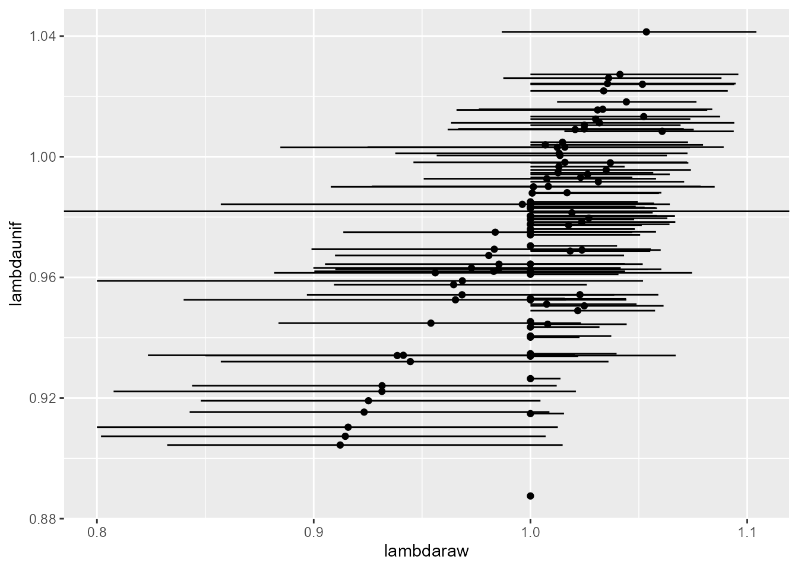
Caveats
Simulating matrices from the posterior ignores correlations between vital rates, which might cause the credible intervals to be too narrow. I wonder if applying bootstrapped samples to the priors would be better? But the more I think about it, the less worried I am about that. I think the correlation between vital rates is in variation over time, and we’re just looking at a single transition.